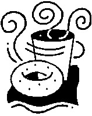

| ＜実態解明型＞恋活前のセルフチェック１【知人→恋人候補編】前編: 意中の30歳以上の女性から恋人候補に選ばれるために Luff up (Passlead Lab) | |
| 深沢 涼 & 植松 優奈 | |
| pasurido (2015) | |
目次
＜ 実態解明型＞ 恋活前のセルフチェック１【知人→恋人候補編】前編
（１）初対面で、男性の80％ が、女性の恋人候補から脱落する
（２）初対面で恋人候補から外される男性は、ほぼ固定化している
（１）恋活女性が望む"恋愛の質"を満たす恋活男性の絶対数が少ない
（２）恋活失敗に対する自分自身の原因について理解や除去をしようとする恋活男性の数が少ない
（２）自身の内面について、「仕事以外の場面で発揮できる付加価値の内容」を認識する
＜ 実態解明型＞ 恋活前のセルフチェック１【知人→恋人候補編】前編
はじめに
本書は、30歳以上の男性の恋愛ポテンシャルの更なる向上を目的として、「30歳以上の女性を恋人にしたいと思っている30歳以上の男性」が女性の恋人候補に残るために不可欠な事柄を記載したマニュアルです。
私が本書を書いた動機は、30歳以上の恋活中の女性で私のことをよく知っている方々から、「私の恋愛経験に基づく知見を、30歳以上の恋活中の男性に対し、書籍を通じて伝えて欲しい」という要望を強く受けたことでした。それまでは、私自身、恋愛に関して特別な知見を持っているという自覚は全くありませんでした。しかし、こうした要望をきっかけとして私の人生を振り返ってみると、私は、普通の男性とは異なり、約40年間ずっと恋愛を中心的な価値として生き続けてきていることに気がつきました。この間、仕事と親友を除いては、心・時間・労力・お金・・・人としての原資のほとんどを様々なバリエーションの恋を実現するために使ってきたと言っても過言ではありません。加えて、これまでに私が恋愛に関して深く関わってきた多数の方々の評によれば、私は、普通の男性的なメンタルのみならず女性的なメンタルをも合わせ持っているらしく、確かに普通の男性には見えない知見や視点を持ち合わせているのかもしれない・・・と感じ、筆を執った次第です。
昨今の30歳以上の女性には、もちろん満足かつ幸せな恋愛生活や結婚生活を送っている方もみえますが、実際には、既婚者、独身者、離婚後独身者を問わず、日々の職場や家庭での義務を果たし続けていくための活力源として、「お互いに、分かり合え、思いやり合え、いたわり合える関係」となれる男性を求めて恋活をしている方が相当数いらっしゃいます。こうした女性の恋活は、必ずしも結婚を前提としたものではありません。むしろ、ストレス社会におかれている30歳以上の女性にとっては、「経済的な充足」よりも「心の充足」を強く求める傾向が高まっているということを、私は肌で感じています。
こうした昨今の女性の傾向については、おそらく、本書を購入されるような恋活に積極的な男性の皆様であれば、既にお感じになっていることではないかと察します。
他方、昨今の男性の傾向としては、「自分を愛してくれる女性がいない男性」や「自分を愛してくれる女性を求める男性」の数が、年齢層を問わず、飛躍的に増加しています。
しかしながら、・・・私の別著である「男性が恋活前に知っておきたい30歳以上の恋活現場の傾向」」にも詳しく記載致しましたが、・・・私は、ＳＮＳを含む近年の恋活経験から、現実の恋愛市場においては、このような昨今の女性の眼鏡にかなう男性の数が著しく不足しているのでは・・・と実感しています。
このことは、視点を変えれば、「女性の眼鏡にかなうように自己点検や微修正をすれば、容易に恋人候補として選ばれる」ということであり、恋活中の男性にとっては、この上ないチャンスであると思います。
「30歳以上の恋愛で成功するために必要不可欠なことは、30歳以上の仕事の場合と同様に、プラスポイントを伸ばすことではなく、マイナスポイントを無くすことである」
このことを、私は、私自身の経験から痛切に感じています。よって、本書には、恋愛成功のためにまずは無くすべきマイナスポイントを多数記載しています。マイナスポイントの内容によっては「当たり前のことである」と感じられる読者の方も多数いらっしゃるのではと察しておりますが、上述のチャンスを確実にモノにするために、今一度、その当たり前の内容をご自身が実行できているかどうかについて、本書でセルフチェックしてみることをお勧めします。
恋の出会いの機会は、自ら積極的に持つように努めない限り、歳を取っていくにつれて少なくなっていくものであり、この傾向は特に仕事漬けになりがちな男性の場合に顕著です。こうした貴重な出会いの機会を、成就させられないまま人生を終了する生き方よりも、成就させて楽しい人生を送る生き方の方が、何倍も素敵だと思います。
「本書を読んだ男性が、本来持っていたはずの何かを忘れていたことに気づき、その後にすんなり恋人ができ、日々、愛を感じる幸せな時間を持てるようになった」
私は、そのような知らせを何より嬉しく思います。
深沢 涼
本書に関してご留意頂きたい事項
●本書は、ボリュームの関係上、前編、後編の２分冊とさせて頂いております。
●本書において登場する男性及び女性は、恋愛する意思と恋愛するために必要な最低限の環境（健康、時間、お金等）を備えている男性及び女性になります。
●本書では、対象とするパーソナリティを、30歳以上の男性のうちの恋人を見つけたいと思って活動している一般人男性（以下「恋活男性」といいます）、30歳以上の女性のうちの恋人を見つけたいと思って活動している一般人女性（以下「恋活女性」といいます）に絞っています。よって、29歳以下の男性・女性の恋愛、一般人以外の方の恋愛については、本書では取り扱っておりません。
●本書で取り扱っている「30歳以上の恋活女性」は、純然たる恋愛目的（以下「恋愛目的」といいます）で相手を探している女性を想定しています。従って、"結婚を前提とした恋愛をする目的"や"恋愛感情の有無とは無関係にとにかく結婚を実現する目的"（以下、これらを総称して「結婚目的」といいます）で相手を探している女性、経済的支援を受ける目的（以下「支援目的」といいます）で相手を探している女性」に選ばれるために不可欠な事柄については、本書では取り扱っておりません。
●本書における「恋人」とは、既婚又は未婚に拘わらず、純然たる恋愛目的の女性と男性が、お互いの偽りなきプライバシーに基づき、お互いに"心を通い合わせて思いやり合う時間を共有していきたい"と思う関係のことを意味します。よって、「プライバシーを偽ったお付き合い」、「体目的のみのお付き合い」等については、本書では取り扱っておりません。
●本書では、恋活男性がターゲットとする女性を恋活女性に絞っています。よって、「恋愛を求めていない」、「恋人はいらない」というステータスの女性に対して恋愛する気持ちを引き起させるテクニックについては、本書には記載されておりません。
●本書は、「女性との出会い方」や「女性が既に好意を抱いている」等の出会いにおける環境的要素をすべて取り除き、どのような恋活女性にどのような出会い方をした場合でも恋人候補に残ることができるように、多面的かつ客観的な要件を記述しています。従って、職場や地域コミュニティ等のような「恋活女性の男性に対するハードルが落ちる環境下での出会い」であれば、こうした環境的要素が有利に働きますので、本書に記載の要件のすべてを具備しなくても、恋人候補に残れることがあります。
●本書は、30歳以上の恋活女性の恋人候補に残るために不可欠な事柄が記載されている書籍です。恋人候補に残った後に恋人に選ばれるためのノウハウについては、本書には記載されていませんが、別の書籍「恋活前のセルフチェック２【恋人候補→恋人編】」 として執筆ないし発行する予定です。
●本書では、現在の恋愛市場において、恋活男性が恋活女性の恋人候補に残るために、恋活男性に不足しがちな点を多々指摘しています。こうした指摘は、あくまで、「恋活男性が、恋活女性に対し、どのような気持ちで、どのような振る舞いをするか」という恋活の場面における不足を指摘するものであり、恋活以外の場面における恋活男性の不足を指摘するものではありません。
●本書に記載されたデータや数値は、あくまで私の実際の経験や知見に基づいて所定の恋活男性ないし恋活女性の母集団における実績から合理的に推定した内容であり、その正確性について保証や科学的証明を付するものではありません。
●本書の内容は、あくまで私の実際の経験や知見に基づいて記載しておりますので、読者の方の中には私とは異なる意見の方もいらっしゃると思います。何分、科学的に唯一の正解の出しにくいテーマであることをご斟酌の上、本書を一つの見解として参考にして頂ければと存じます。
第１章 30歳以上の恋愛市場の現状（恋人候補選定関連）
現在の社会において、共に30歳以上の恋活女性と恋活男性の間で恋人関係を成立させるためには、まず、恋活の場である「恋愛市場」の現在の特徴についてしっかりと認識しておくことがとても大切です。なぜなら、現在の恋愛市場は、平成１５年以前のものとは全く異なったものになっており、現在もなお、男性不利の状況が進行していることから、恋活成功のためには、現状に即した対策をしっかりと立てておく必要があるからです。
こうした特徴につきましては、私の別著である「男性が恋活前に知っておきたい30歳以上の恋活現場の傾向」 に、詳しく記載しております。但し、本書の読者の方の中には、未だお読みになられていない読者の方も多数いらっしゃると思います。そこで、まず初めに、本書のテーマである「恋活女性による恋人候補の選定」に関連するものに絞り、恋愛市場の傾向や実態を読者の皆様との間で共通認識をしておきたいと思います。別著とほぼ同じ内容での説明となりますが、本書の読者の方の理解の便のためですので、何卒ご容赦ください。
なお、本書に記載された現在の恋愛市場の傾向や実態、評価は、直近２年間のリアル社会及びＳＮＳにおける、私自身の恋活経験及び私と深い意思疎通のある多数の30歳以上の恋活女性の恋活経験に基づくデータ（以下、「深沢データ」といいます）に基づいて考察ないし推定したものです。この深沢データは、単なる見ず知らずの女性に対するアンケートではなく、実際に私と懇意になった多数の恋活女性が私に露わにしてくれた内心に基づいて作成されていますので、ミリ単位での正確性には欠けるかもしれませんが、現在の恋愛市場の実態と大きくかけ離れていることは無いものと私は考えています。
それでは、30歳以上の恋愛市場における恋活女性による恋人候補の選定に関し、実態、要因の順に説明をしていきたいと思います。
１．実態
（１）初対面で、男性の80％ が、女性の恋人候補から脱落する
まずは以下の図１ をご覧下さい。

この図１ は、30歳以上の恋活女性が、何人かの30歳以上の恋活男性に初めて会った後に、各恋活男性について下した評価の割合です。この割合は、あくまで、深沢データに基づいて算出した概算値です。なお、本書における「 初対面」とは、出会いのきっかけが何であるかを問わず、二人きりで会うことを約束した上で初めて二人きりで会う機会のことを意味します。
図１ 中の「除外」は「空間を共にしたくない」という評価、「対象外」は「空間を共にしてもよいが、恋愛対象としてはあり得ない」という評価、「恋人候補」は「恋愛対象としての決め手は無いが、他により良い男性に出会えなかったら、恋愛対象になるかもしれない」という評価を意味します。「恋人候補」のうちの「恋人」は初対面 の後に何らかの恋愛関係に発展したケース、「恋人候補」のうちの「落選」は初対面 の後に何らかの恋愛関係に発展しなかったケースを表しています。
このように、30歳以上の恋活女性は、初対面 で、除外50％ と対象外30％ に属する計80％ の男性を、恋愛対象としてあり得ないと判断し、恋人候補から外していることがわかります。
（２）初対面で恋人候補から外される男性は、ほぼ固定化している
以下の図２ をご覧下さい。この図２ は、図１ に示した割合の元となるデータの一部を抜粋したものです。

図２ に示すように、男性Ａ、男性Ｂ、男性Ｅ、男性Ｆは、女性Ａ〜Ｆのいずれの女性からも初対面 で恋人候補から外されている一方、男性Ｃ、男性Ｄは、女性Ａ〜Ｆのいずれの女性からも初対面 で恋人候補として残されています。
このように、30歳以上の恋活女性が初対面 で30歳以上の恋活男性に下す評価は、女性によって大きく変わるものではなく、ほぼ固定化していることがわかります。要するに、「負け組男性が固定化している」 という実態があるのです。
２．要因
さて、「多数の30歳以上の恋活女性は、初対面 で、80％ の男性、しかも、同じ男性を、恋人候補から外している」という実態について説明致しました。
なぜ、このような偏りが起きているのでしょうか？
その主たる理由としては、次の２つがあります。
●現代の恋愛市場には、恋活女性が望む"恋愛の質"を満たす恋活男性の絶対数が少ないこと
●現代の恋愛市場には、恋活失敗に対する自分自身の原因について理解や除去をしようとする恋活男性の数が少ないこと
現代の恋愛市場においては、こうした２つの理由を知ることなく、「いつかは、自分を選んでくれる良い女性に巡り合えるはず」というイージーモードで恋活を継続し続ける恋活男性が増え続けており、"恋活男性のガラパゴス化"が顕著になっています。
以下、これら２つの理由について、説明をしていきます。
（１）恋活女性が望む"恋愛の質"を満たす恋活男性の絶対数が少ない
"恋愛の質"は、恋愛感情を支配するものが何であるかによって定まります。
恋愛感情を支配するものは、男女共に、若くて純粋な時は"心"というPureな要素のみなのですが、年齢を重ねていくにつれて"見返り"というDirtyな要素が含まれてきます。例えば、「お金を持っているから好きになる」、「何でもやってくれて便利だから好きになる」、「セックスしたいから好きになる」、「子供を作りたいから好きになる」、「自分のために家事労働をしてくれるから好きになる」・・・これらの場合には、恋愛感情が、金、時間、セックス、労務等の"見返り"に支配されていることになります。
この恋愛感情を支配する"心"と"見返り"の割合は、女性の場合には、相手の男性とお付き合いする目的が、恋愛目的か、それとも、結婚目的・支援目的かによって異なります。このうち、恋愛目的の女性の場合には、年齢を重ねても、"見返り"が含まれる割合が極めて少ない・・・即ち、恋愛感情を支配するものは"心"であるという傾向があります。
一方、男性の場合には、恋愛感情を支配する"心"と"見返り"の割合は、女性のように恋愛目的か結婚目的かで変わるのではなく、長く付き合いたいと考えている相手かどうかで変わります。このうち、長く付き合いたいと考えている相手との恋愛の場面であっても、男性の場合には、年齢を重ねていくにつれて、セックスや身の回りの世話、介護等の"見返り"が含まれる割合が多くなる傾向があります。
よって、恋活男性は、平均的に見て、「恋愛感情を支配するもの」における"心"の割合が、恋愛目的である恋活女性よりもかなり低く、恋活女性と乖離してしまっているのです。この乖離が、恋活女性に、「自分が望む"恋愛の質"を満たす恋活男性の数が少ない」というように感じさせてしまうのです。
加えて、男性は、長く付き合いたいと考えていない相手との恋愛の場合には、年齢を重ねていくにつれて、恋愛感情を支配するもののほとんどが"見返り"の状態となります。こうした男性は、独身者か既婚者かを問わず、現在の恋愛市場にいる恋活男性の多数を占めています。このため、実際の出会いの場面では、このような「相手と長く付き合いたいと考えていない男性」と「恋愛目的の女性」との出会いがとても多い状況になっています。例えば、恋愛目的の女性に、この女性とは長く付き合いたいとは考えていないが短期的な恋愛をしたいと思っている男性がアプローチするような場合です。この場合には、たいてい、出会いの初期段階で話が噛み合わず、女性は男性に対して「セックスが主目的で、私を風俗嬢と同一視している男」という印象を持ち、男性は女性に対して「セックスするまでに手間のかかる面倒くさい女だ」という印象を持ってしまい、お互いに早期に決裂してしまいます。恋愛目的の女性は、このような出会いを一度経験すると、その後に出会う男性に対して疑心暗鬼になってしまい、初対面 でセックス目的を感じたら、恋人候補から外そうという意思が働くようになります。現在の恋愛市場では、こうした事例を経験している恋活女性の数が比較的多く、このことが、恋活女性による相手の恋活男性に対するポジティブな意思決定を躊躇させてしまっているのです。
（２）恋活失敗に対する自分自身の原因について理解や除去をしようとする恋活男性の数が少ない
上述のように、恋活女性と恋活男性との間には、平均的に見て、求める"恋愛の質"について大きな乖離があります。このため、実際の恋活場面において「意中の恋活女性に出会っても、この恋活女性から選ばれなかった」という恋活失敗を経験する恋活男性の数は、必然的に多くなります。
こうした恋活失敗を経験した恋活男性は、・・・読者の皆様の中にも同じような経験をされた方がいらっしゃるのではと想像しますが・・・、恋活失敗を経験した時に何を思い、その後にどのような行動をしたでしょうか？
本書をお読みになるようなアグレッシブな男性は、もちろん、「次に出会った恋活女性からは恋人に選ばれるように頑張るぞ！」という願望的な意欲を持ったことと思います。また、恋活失敗の原因についても、「相手の恋活女性が希望する年齢や外見、居住地の距離、収入、付き合い方等の条件の１つを満たさなかったから」、「相手の恋活女性の価値観が自分に合わなかったから」、「たまたま相性が悪かったから」のような環境的な原因については理解し、「次は、そのような環境的な原因のない女性を見つけよう」という見極め対策を講じたのではないかと思います。
では、「このような単なる願望の表明や環境への責任転嫁に止まらず、恋活失敗の原因は自分自身にある（即ち、選ばれなかった自分に問題がある）と仮定して、その原因について謙虚に理解し、その原因を除去すべく自分自身の弱点を克服して価値を高める努力をした方」・・・このような方は、果たして、どのくらいいらっしゃるでしょうか。
このような方は、深沢データでは、「図１ 及び図２ に示した恋人候補に選ばれる20％ の恋活男性の中には相当の割合で存在しているが、恋人候補に選ばれない80％ の恋活男性の中には、ほとんど存在していない」という傾向が出ています。この傾向が、勝ち組男性の固定化を更に助長してしまっているのです。
既述しましたように、恋活女性と恋活男性との間には、求める恋愛の質、即ち、「恋愛感情を支配するものにおける"心"の割合」について乖離がある以上、出会った男女間において、こうした乖離による差分を失くさない限り、恋愛関係は成立しません。差分をなくす方法としては、次の（ ａ ） 、（ ｂ ） のいずれかになります。
（ａ）相手の恋活女性に、恋愛感情を支配するものとして、"心"の割合を減らし、その分 "見返り"の割合を増やしてもらう。
（ｂ）恋活男性自身が、恋愛感情を支配するものとして、"見返り"の割合を減らし、"心"の割合を増やす。
ここで、（ ａ ）の方法 の実現可能性が高いのであれば、たとえ恋活に失敗しても、あまり気にせずに、相手の女性等の環境的な責任にしておいて、次の女性（恋愛の定義を自分に合わせてくれる女性）との出会いを待つ、ということで十分であると思います。しかし、30歳以上の恋活女性の場合、（ ａ ）の方法 の実現可能性は、理論的にも実態においても極めて低いと考えられます。なぜなら、女性が恋愛感情を支配するものとして "見返り"の割合を増やすのは、結婚等による財産的利益や家事労働に関する止むを得ない依存のためであり、こうした依存を前提としない恋愛目的の場合には"見返り"の割合を増やす理由が無いからです。むしろ、結婚等によって止むを得ずに増やした"見返り"の割合を可能な限り少なくして、"心"だけでも、繋がり、かつ、いたわりあえる関係を実現しようとするのが、現在の恋活女性の求める恋愛なのです。
よって、現在の恋愛市場において恋人関係を成立させるためには、（ ｂ ）の方法 を取らざるを得ず、恋活失敗の原因は自分自身にあると認めて、その原因を理解し、除去していくことが必須になるのです。単なる願望の表明や環境への責任転嫁をしているだけでは、時代が昭和と同様のものに変わらない限り、恋人を見つけられずに生涯を終えてしまうことにもなりかねないのです。
男性の場合、一般に、仕事で失敗した時には、その失敗の原因は自分自身にあるとして、その原因を理解し、二度と同じ失敗を繰り返さないように、自分自身のやり方を改善していく方が多いと思います。一方、恋愛で失敗した時には、原因は相手の女性等の環境的要素にあるとして、仕事で失敗した時とは真逆の対応をしがちです。これには、「仕事の失敗については自分の至らなさを認めてもいいけど、恋愛の失敗については自分の至らなさを認めたくない」という心理が働いており、「会社から"価値が無い"と言われること」よりも、「好きな女性から"価値が無い"と言われること」の方が、遥かに自分のプライドが傷つくということを表しています。
私も、同じ男性として思うのですが・・・、恋活失敗の原因は自分自身にある（即ち、選ばれなかった自分に問題がある）と真正面から認めることには、自己のプライドを捨てて過去を全否定するほどの勇気が必要になると思います。しかし、男性であれば、仕事ではそのような勇気を日々発揮して切磋琢磨しているのですから、恋愛成立というゴールを仕事の成功というゴールと同じように考えさえすれば、必ずできることであると確信しています。
「読者の皆様がどんな恋活女性からも恋人候補として選ばれるように、今一度、本書でセルフチェックして、恋のチャンスを確実に成功に導いて欲しい。」
私が本書を書いたのは、このためです。
故に、本書では、出会いの端緒における恋活失敗の原因と対策について、生の事実に基づいた実践的な内容を、読者の皆様にご提供しています。
よって、読者の皆様が「恋活失敗の原因は自分自身にある（即ち、選ばれなかった自分に問題がある）」と仮定して頂きさえすれば、その原因と対策については本書を読むだけで頭と体に染みつきますので、以後の恋活における失敗をなくすことができます。
逆に、読者の皆様が「恋活失敗の原因は自分自身にある（即ち、選ばれなかった自分に問題がある）」と仮定することができない場合には、本書に記載された原因と対策について、頭で理解することを拒絶し、または、頭では理解しても体で実行することを拒絶してしまうため、本書が皆様の恋活成功に寄与しなくなってしまいます。
そこで、次章では、読者の皆様が、「もしかして、恋活失敗の原因は自分自身にあるかも・・・」と"納得"することができるように、現在の恋愛市場における恋活女性による恋人候補選びの生々しい現実を共有していきたいと思います。
ここで、次章での"納得"をし易くするために、「次章に進む前に忘れて欲しい、昭和から平成初頭までの時代におけるイージーな恋愛の考え方」を列挙してみました。心苦しいものがあるかもしれませんが、是非、ご一読ください。
・恋愛っていうのは、"あばたもえくぼ"みたいなものなので、需要と供給がうまく分散して、よほど奇妙な人でない限り、カップルが成立するものである。
・女性には好みがあるから、地道に恋活をし続ければ、いつか、オレのことを好みだという女性に巡り合えるはずである。
・オレよりも不細工で貧乏な男友達でも恋人がいるから、オレにだって恋人ができるはずである。
・オレは、過去に恋人として付き合ったことがあるから、初対面 で恋人候補から外される80％ の男性には入っていない。
・オレは、青春時代の恋愛の成功例がしっかりと頭に焼きついていて、「女ってものは、こうすれば惚れるものだ」という行動についての持論を持っているから、その気になれば恋人なんてすぐにできる。
列挙したような楽観的な思いや自己擁護の思いを持ち続けることは、私は、現代の厳しい恋愛市場においては、「恋愛失敗の無限連続」という多大な時間や機会の損失を生じる危険が高いと考えます。このことは、本書を最後までお読み頂いた時には、きっと、より確信を持ち、「楽観的に考えることや自己擁護なんてしている場合じゃない・・・」という前向きな意欲に発展していることと思います。
第２章 恋人候補に選ばれるために不可欠なマインド
恋活女性から恋人候補として選ばれるために不可欠なものとしては、もちろん外見要素や内面要素という客観面もありますが、最も不可欠なものは、「恋活に対して臨む意識」 という主観面です。何事においても、客観面のクオリティは主観面のクオリティに比例するものだからです。恋活においても同じであり、第４章の恋活前セルフチェック【恋人候補版】（以下、「恋活前セルフチェック」といいます）の効果は、その人の意識や目標の高さに比例することになります。
そこで、本章では、まずは、恋活に臨む高い意識や目標について、読者の皆様に呼び戻しつつ、そのクオリティを高めるべく、「恋人候補に選ばれるために不可欠なマインド」というテーマについて説明していきたいと思います。こうしたマインドとしては、「現状から削除すべきマインド」と「現状に付加すべきマインド」の２つに分けることができます。以下、この２つのそれぞれについて、恋愛市場の現状に引き付けながら説明していきたいと思います。
１．現状から削除すべきマインド
第１章において、現在の恋愛市場において恋活男性の置かれている状況について、明らかにしてきました。
おそらく、このような状況を客観的な立場で納得された方はたくさんいらっしゃるのでは・・・と察しますが、自分自身のこととして、即ち、「自分は初対面 で恋人候補から外される80％ の男性の中に含まれている」と感じられた方は、少ないのではないかと思います。
例えば、過去に恋愛経験のある方については、過去の栄光を思い浮かべて、「自分は80％ に入っていない」という気持ちになるのではないでしょうか。また、現在も、会社やサークル、習い事、地域団体等のコミュニティで女性との関わりがある方については、コミュニティで女性とうまくやっていること等を思い浮かべて、「自分は80％ に入っていない」という気持ちになるのではないでしょうか。
私も男ですから、「自分は80％ に入っている訳がない」という主観や「自分は80％ に入っていると思いたくない」というプライドは、とてもよくわかります。
しかし・・・あえて、読者の方の今後の幸せな恋愛ライフを願って、はっきりと申し上げますが・・・、こうした主観やプライドを、少なくともこの本を読み終わるまでの間は、どうか捨てて下さい。 なぜなら、現在の恋愛市場では、「このような主観やプライドを固持している限り、恋活において置き去りにされ、恋活の成功率は、この先、年々低下していく」 という傾向が非常に強いからです。
逆に、「自分は80％ に入っているかもしれない」という謙虚な気持ちで、本書の第４章の恋活前セルフチェックを素直にかつ積極的に実行された方は、恋活の成功率が上がり、加えて、この先も下がることがないという自信をつかむことができることを、私は自らの経験から確信しています。
お恥ずかしい話ですが、こんな偉そうなことを書いている私自身、数年前まで、つまらない主観やプライドを固持していました。「10代からずっと切れ目なく恋人がいる」という過去の栄光を捨て去れなかったからです。
つまり、本書の第４章の恋活前セルフチェックは、そんな私自身が主観やプライドを捨てて、現代のどんな女性からも確実に恋人候補に選ばれるために試行錯誤しながら実行し、その結果、実際に恋人候補に選ばれるための必須要素であったものをピックアップして作ったものなのです。
ところで、30歳以上の男性の場合、歳を重ねるほどに、女性の身体に接触するアプローチが、触られた女性から、セクハラや猥褻、意に反する、受け入れられない等の迷惑行為と捉えられ易くなります。女性から被害届が出された暁には、その情報がインターネットを通じて世界中に拡散し、瞬く間に残りの人生が終了してしまいます。その男性が「相手の女性に真剣に好意があった」のように言い訳しても、周りからの嘲笑を煽るだけで、火に油を注ぐことになります。
しかし、男性は、男としての機能を備えている限り、好みの女性に接触したいという欲望を消し去ることはできません。よって、女性に対する加害者とならない人生を確実に送るためには、「生涯、一般女性に対しては身体的な接触をせず、身体的な接触の欲望を抱いた時には風俗店に行って解消する」ということになります。このような人生を送りたいと思う男性は、おそらく、本書を手に取った方の中には、いらっしゃらないことと思います。むしろ、本書を手に取るような恋活に積極的な男性の方は、「女性から身体的な接触を迷惑行為として捉えられるような男性にはなりたくない」、「女性から身体的な接触をしたい＆ されたいと思われるような男性になりたい」 のように、これからのアグレッシブな人生を考えていらっしゃることでしょう。
世間や身の回りで起きている具体的な事例を考察してみますと、身体的な接触を女性に迷惑行為として捉えられてしまうような男性は、その事象を客観的に見たどの第三者からも一様に、「その男性の年齢や外見・内面の劣化を考えたら、その女性にアプローチするのは明らかに分不相応な行為であり、その女性から好意を抱かれていないことは十分に自覚できるでしょう」のような身の程知らず的な評価をされがちです。このことは、女性への身体的な接触が迷惑行為と捉えられる男性には、客観的に共通のマイナス要素があることを意味しています。こうした共通のマイナス要素をクリアしない限り、「女性から身体的な接触をしたい＆ されたい」と捉えられることはあり得ません。本書に記載した恋活前セルフチェックは、こうした客観的に共通のマイナス要素をピックアップしたものでもあり、恋活において女性から加害者と扱われてしまうことを防止する機能を果たすものでもあるのです。
２．現状に付加すべきマインド
（１）純粋な恋心を復活させる
恋活女性から恋人候補に選ばれるために現状に付加すべきマインドの１つ目は、「純粋な恋心を復活させる」ということです。
なぜ、こんなマインドを持つ必要があるのでしょうか？
第１章において、恋愛目的の女性は、年齢によらず、恋愛感情を支配するものが"心"であるということを説明致しました。こうした恋愛目的の女性は、恋愛感情を支配するものの中核が"心"でない男性（"見返り"の支配率が高い男性）に対しては、恋愛の価値基準が同じでなく、自分とは異なる世界に属する人であると感じ、それだけで恋愛対象外とみなしてしまいがちです。よって、こうした女性と同様の状態、即ち、恋愛感情を支配するものの中核が"見返り"ではなく"心"であるという状態を、貴男の中に作り出すことが必要になるのです。そのためには、・・・貴男も、10代の時は、恋愛感情を支配するものの中核が「心」であったはずです。よって、その時の自身の気持ちや行動を思い出してみるのが最もイメージし易いのではないかと思います。
貴男が「10代で恋をした時の気持ちや行動」がどんな感じだったか、今一度、思い出してみてください。おそらく、以下のような感じだったのではないでしょうか？
・好きな女性の傍に近づいたり、好きな女性と話をしたりするだけで、嬉しいと感じる。
・電話やメールをしようとするだけで、何を話そうか・・・何を書こうか・・・と緊張する。
・デートの誘いや告白をしようとする際に、女性から断られるんじゃないかと気をもむ。
こうした気持ちを貴男自身に復活させると共に、「恋愛目的の女性は、年齢に拘らず、これらの気持ちに近い心理状態である」ということを、忘れずに覚えておいて下さい。そうすれば、女性が最も嫌う男性の行動の１つである「横柄な態度」は、自然と取り得ないことと思います。
貴男が10代の時の学校等の生活環境を思い出してみて下さい。そこでは、「固定の80％ の男性が女性の恋人候補から外れる」という現象は無く、むしろ"あばたもえくぼ"的なカップルがバリエーション広く成立していましたよね。これは、その生活環境下では、貴男も相手の女性も、恋愛感情を支配するものが「心」であるということで、一致していたから なのです。
（２）自身の内面について、「仕事以外の場面で発揮できる付加価値の内容」を認識する
恋活女性から恋人候補に選ばれるために現状に付加すべきマインドの２つ目は、読者の男性の方が、自身の内面について、「仕事以外の場面で発揮できる付加価値の内容」を認識することです。簡単に言うと、「貴男から仕事を取った時に、貴男の内面には、どんなすばらしい価値があるの？」ということです。
なぜ、こんなマインドを持つ必要があるのでしょうか？
一般的に、女性は、人生において、男性よりも多種多様な人間関係環境を経験します。学校卒業後に経験する人間関係環境としては、職場、家庭、親族、地域団体、PTA、子供の習い事、趣味的サークル・・・挙げていくとキリがありません。
これに対し、男性の場合には、ほとんどの方の経験する人間関係環境が、職場と趣味的サークルぐらいではないでしょうか？中には、家庭、親族、地域団体、PTA、子供の習い事という人間関係環境も経験しているという方もいらっしゃるかもしれませんが、その経験値は、果たして女性と同等以上でしょうか？
女性は、これらの人間関係環境において、様々な価値観を持っている人、時には自分とは全く違う価値観を持っている人を無視することが許されない状況、しかも、こうした環境から逃げることも許されない状況の下で、こうした人から当てにされ、期待され、責任を押し付けられるという理不尽で弱い立場を経験しています。しかも、これらの人間関係環境は、いずれも職場とは異なり、目的が不明確な集団環境です。よって、合目的的な議論の時間は極めて少なく、こうした人間関係環境に置かれた女性は、人それぞれの主観や気分に揺さぶられて、結論がなかなか出ない、約束が当然のように守られない・・・等により不毛な時間を費やしています。
以上より、こうした人間関係環境におかれた女性に特有の悩みや苦しみを理解している男性は、世の中にとても少ないことがわかると思います。逆に言うと、こうした悩みや苦しみを理解できる頭脳や心を持っている男性は、女性から尊敬され、脚光を浴びることになるのです。
とは言っても、実際に経験しないとわからないこともあります。実際に経験していないのに、女性に対して予測で浅いコメントを出したりすること（特に、男性が職場の場合と同じ物差しで判断したコメントを出すこと）は、「わかってない」と失格の烙印を押されてしまう危険があるので、避けるべきだと思います。
では、人間関係環境の経験範囲が狭い男性は、どうすればいいのか？
まずは、「自分の頭の中から仕事で得た価値観を全部捨ててみて、その時に残る価値としてどんな価値があるか？」ということをシミュレーションしてみて、貴男自身に残る価値を全部書き出してみることを強くお勧めします。
私も男性ですから、男性にとっての仕事の重要性は、とてもよくわかっています。そして、女性は、仕事ができる男性を好むことも、とてもよくわかっています。
しかし、いくら仕事ができる男性であっても、仕事以外の場面で仕事上の価値観を押し付けてくる男性は、必ずと言っていいほど、女性から拒絶されます。仕事上の価値観からは、「人としての心」のような暖かいエッセンスを感じ取りにくい からです。ですので、仕事ができる男性の方は要注意です。
仕事以外の場面で起きている問題を仕事上の価値観で解決しようとした場合、例えば、以下の（ａ）から（ｄ） までのような解決方法や解決結果は、「甘い」、「ぬるい」という判断基準で、排除されがちです。
（ａ）何の得にもならない優しさを提供すること
（ｂ）ボーっと無駄な時間を過ごすこと
（ｃ）利益の無い人と関わること
（ｄ）よく調べないまま実行して、失敗すること
しかし・・・純粋な恋愛経験をお持ちのある方であれば、この（ａ）から（ｄ） までのようなことを実行したことによって、彼女から好評価されたり、彼女からの愛が深まったり、彼女から癒しをもらえたりしたという過去の出来事を、きっと思い出されることと思います。
つまり、「貴男から仕事を取った時に、貴男の内面には、どんなすばらしい価値があるの？」という自問自答によって発見した価値は、女性が貴男に「心」を感じてくれる宝なのです。
この宝を貴男の大切な価値観として持った上で、貴男が女性に対して自分自身を表現していくことにより、女性は、貴男のことを、「心」によって恋愛感情が支配されている男性であると察知し、自身の恋愛基準と同じ基準を持っている同類族と評価します。これにより、女性から初対面 で恋愛対象外とみなされることがなくなるのです。
（３）自分自身の外見について、「恋愛目的の女性から見た、現在の客観的な価値」を認識する
恋活女性から恋人候補に選ばれるために現状に付加すべきマインドの３つ目は、読者の男性の方が、 自分自身の外見について、「恋愛目的の女性から見た、現在の客観的な価値」を認識することです。
なぜ、こんなマインドを持つ必要があるのでしょうか？
おそらく、読者の方は、「女性は、恋人候補である複数の男性の中から恋人として１人の男性を選ぶ際に、外見だけで判断しない」ということをご存知なのではないかと思います。これは、確かにその通りです。例えば、女性が、恋人候補の中に「好みの顔の男性」と「好みではない顔の男性」がいる際に、性格を加味して「好みではない顔の男性」を恋人として選ぶということは、私たちの身の回りで、今も昔も変わらずに起こっていることです。
しかし、これは、あくまで、「女性の恋人候補に入ったならば」という話です。
この前段階、即ち、女性が初対面 の男性を恋人候補として残すかどうかというフィルタリングの段階では、ほとんどの女性は外見に重点を置いて男性を判断します。つまり、非情にも、外見のみを理由にして恋人候補から外されてしまうのです。
ここで、読者の方にまずチェックして頂きたいことは、「この マインド を備えるためには、ご自身について以下の３つの価値を認識することが必要になる」ということです。
・「現在の価値」
・「恋愛目的の女性から見た価値」
・「客観的な価値」
「若い時に恋人がいたorモテた」等の武勇伝は、外見に関する過去の価値ですので、認識の対象ではありません。あくまで、外見に関する「現在の 」価値 を認識する必要があります。
また、「最近、美人の女性と結婚した」という嫁自慢は、第１章にて説明したように、"見返り"に支配された恋愛感情を持つ結婚目的の女性から見た価値ですので、認識の対象ではありません。あくまで、外見に関し、「"心"に支配された恋愛感情を持つ恋愛目的の女性」から見た価値 を認識する必要があります。
更に、「会社で部下からカッコいいと言われている」、「家族から若いと言われている」等の仲間集団での評価は、仲間集団という極めて狭い世界における狭視野かつ社交辞令含みの価値であり、客観的とは言えませんので、認識の対象ではありません。あくまで、外見に関する「客観的な 」 価値 を認識する必要があります。
こうした武勇伝や嫁自慢、仲間集団での評価が頭に残っていると、「恋愛目的の女性から見た、現在の客観的な価値」 を認識する妨げとなりがちです。ですので、読者の皆様は、今この時点で、こうした評価を、一度、頭の中から消し去って下さい。
こうして消し去った状態で、本書を最初から読み進めて最後に第４章の恋活前セルフチェックを行って頂くことで、自身の外見についての「恋愛目的の女性から見た価値」 、「現在の価値」 、「客観的な価値」 を素直にかつ正確に認識することができます。本書の恋活前セルフチェックでは、貴男が女性の恋人候補として確実に残るようになるために、「現代の30歳以上の恋活女性が恋人候補を選ぶ際に判断する外見として、どんな要素があるのか？」ということが具体的に列挙されているからです。これにより、読者の皆様は、「恋愛目的の女性から見た、現 在の客観的な価値」 を認識するために、「わざわざ見知らぬ多数の女性に自分自身の全ての外見的要素について価値を評価してもらう」のような面倒くさい行為をする必要がなくなるのです。
現代の恋活は、女性が"選ぶ側"として男性よりも圧倒的に優位に立っており、男性にとっては戦国時代です。男性は、過去の栄光の固持、嫁の恋愛感情が純粋であったとの誤解、社交辞令的評価への依存等をしている限り、この戦国時代において恋活の勝者にはなれないことを、どうか肝に銘じておいて下さい。
以上説明しました「恋人候補に選ばれるために不可欠なマインド」のまとめを、次の図３ 及び図４ に表してみました。図３ は、このマインドを持たない男性が恋活前セルフチェックを行う前の状態を、図４ はこのマインドを持って恋活前セルフチェックを行った後の男性の状態を示しています。今一度、両者の差の大きさをイメージして感じてみて頂ければと思います。
第３章 恋活女性は、初対面の恋活男性の何を評価しているか？
さて、第２章までお読み頂き、自分自身の内面（心）及び外見について、恋活に臨むに際してのリフォームのイメージがなんとなく掴めたのではないかと思います。こうしたイメージを第４章の恋活前セルフチェックにおいて読者の皆様の具体的な理解に落とし込んでいく予定ですが、・・・
その前に、「現在の恋愛市場に存在している恋活女性は、初対面 の恋活男性の何を評価していて、何を評価していないのか？」という大きな枠組みを、本章にて押さえておきたいと思います。
恋活女性が初対面 で評価している項目は、外見、内面、心だけではなく、例えば、内面を推知させるような言動や行動といったものもあります。
また、男性が一般的に「初対面 の恋活女性に評価されている」と思っている項目の中には、実際に恋活女性が初対面 で全く評価していない項目もあります。こうした項目については、いくらアピールしても恋人候補に残る作用は働かず、過度にアピールすれば、「女性のことをわかってない」と認定され、即座に恋人候補から外されてしまいます。
そこで、恋活女性が、初対面 の恋活男性について、評価している項目（以下、「評価項目」といいます）と評価していない項目（以下、「非評価項目」といいます）を列挙しつつ説明していきたいと思います。
なお、ご注意頂きたいのは、あくまでも、「初対面 での評価項目、非評価項目である」ということであり、「非評価項目は恋活全体において具備不要である」という意味ではありません。初対面 で全ての評価項目を全て具備することを前提として、更に、非評価項目をも具備していることは、恋人候補に残った後、更に恋人の座を射止めるために有効なポイントとなり得ます。
１．初対面での評価項目
恋愛に至る前の段階である恋活女性は、幾つになっても、これから出会う男性に対する理想を強く抱いています。このため、こうした恋活女性に「初対面 での評価項目は何ですか？」と質問してみると、こんなことも、あんなことも・・・のような多数の評価項目が人それぞれの表現で返ってくることと思います。
こうした恋活女性による"恋愛前の理想"と"恋愛に陥った時の現実"との一致・不一致を私の経験に基づいて考察してみますと、恋活女性による初対面 での評価項目のうちの不可欠なものは、以下の４つです。
（１）国民の義務の履行
（２）支払いに関する「意欲の表明」と「行動」がある
（３）学がある
（４）外見・内面のバランス
この初対面 での４つの評価項目は、恋活男性が恋愛市場に出るために具備すべき必須条件です。このうち、（４） については、男性にとって最もつかみどころのない条件であることから、第４章の恋活前セルフチェックにおいて詳細に説明し、皆様の理解に落とし込んでいきますので、ご安心ください。但し、（１）から（３） までについては、もし現時点で不備な評価項目があった場合には、第４章の恋活前セルフチェックをする前に、まずは具備するように改めることが必要になりますので、本章の説明でしっかりとチェックして頂ければと思います。
逆に言えば、この４つの評価項目 さえ備え、かつ、４つの評価項目 を全て備えていることを意識し自信を持って恋活女性に臨めば、どんなタイプの恋活女性からも、初対面 の後に「恋人候補として残そうかな・・・」のような、門前払いではなく、ちゃんと土俵に乗っている評価がもらえることでしょう。
（１）国民の義務の履行
初対面 での評価項目の１つ目は、「国民の義務を履行している」ということです。
わが国の憲法では、国民の義務として、教育、勤労、納税の３つが定められています。30歳以上であれば義務教育は修了していますので、ここでの評価項目は、勤労、納税の２つの義務になります。結婚や認知の経験のある男性の場合には、更に、配偶者や子供に対する扶養の義務が追加される場合があります。
ところで、30歳以上の恋活女性に「どんな男性と恋がしたいの？」と聞いてみると、最初に返ってくるのが「ちゃんとしている男性」という答えです。更に、「ちゃんとしているってどういう事？」と聞いてみると、「大人としてやるべきこと ・・・ちゃんと働いていて、ちゃんと税金払っていて、ちゃんと子供等の家族の生活のために十分なお金を入れている男性」という答えが返ってきます。
そのココロは、自分がその男性の彼女になったときに、他人から「だらしない同類」として見られたり、"その男性から義務を果たしてもらっていない人"と同様に自分が粗末に扱われたりすることを嫌うからです。女性は、体裁やモラルに対する意識が男性よりも高く、社会生活する上での最低限の義務を果たさないことに対しては、とても厳しいのです。
そして、ちゃんとしている時期については、30歳以上の恋活女性は、「今、そして、これからも、ちゃんとしている」ということが必要で、過去のことにはこだわりません。 逆に、過去にちゃんとしていても、今、ちゃんとしておらず、これからもちゃんとしないように予測される場合には、女性は、現実と未来を重視することから、ＮＧと判断します。
私もそうでしたが、男性の場合には、仕事や稼ぎに「波」が付き物であり、この「波」に巻かれている状況の時、ふと目の前の大切な義務を忘れてしまうことがあります。男性としては、こういう時にこそ、恋人に傍にいて欲しいと思うのですが、女性はそれとは真逆の心理状態となっているのです。勿論、女性が男性に代わって義務を果たそうとする場合もありますが、それは、その女性が余程その男性にぞっこんである場合に限られます。
ですので、もし読者の方がこの項目を満たしていないのでしたら、恋活を始めるタイミングは、「波」を過ぎて安定飛行に入ってからにした方が、恋活効率（恋活に費やす時間・費用対効果）の面で賢明であると思います。
（２）支払いに関する「意欲の表明」と「行動」がある
初対面 での評価項目の２つ目は、「支払いに関する意欲の表明と行動がある」ということです。
初対面 の場所では、二人で一緒に入った喫茶店での飲み物代等のように、恋活女性、恋活男性それぞれに代金の支払が生じます。「支払いに関する意欲の表明がある」とは、恋活男性が、恋活女性に対し、「自分の分の代金だけでなく女性の分の代金も支払いたい」という意欲を表明することです。「支払いに関する行動がある」とは、実際に恋活男性が自分の分の代金だけでなく恋活女性の分の代金も支払った、ということです。
恋活女性は、初対面 の場に備え、髪や服装等の身なりを整えるための準備を、時間をかけて入念にしてきます。また、恋活女性は、初対面 の際には、「私を気に入ってもらえるだろうか・・・、私との時間を楽しいと思ってくれるだろうか・・・」等の不安を抱いています。そんな恋活女性に対しては、初対面 の終わりがけに、「わざわざ来てくれて、一緒に過ごしてくれてありがとう」という感謝の気持ちを伝えたいですよね。こうした感謝の気持ちを恋活女性に伝えるためには、恋活男性からの言葉（＝口先）だけでは不十分です。恋活女性は、"恋活男性が二人で会うためにかかった代金を私の分まで気持ちよく支払ったという事実" を確認して初めて、「私との時間に価値を感じてくれたんだ。来て良かった。」と感じるものなのです。
読者の方が「相手の女性の年齢や立場に拘らず、初対面 の時には、女性にお金をかけさせず、かかったお金は自分が全額支払うことが当たり前」というポリシーなのでしたら、この２つ目の評価項目はクリアです。
なお、「支払に関する能力（支払能力）」は関係ありません。代金が高かろうが安かろうが、全部自分が支払うという意思を表明してサッと支払うことが重要です。ですので、もし初対面 の際にお金の持ち合わせがあまり無いような場合には、相手の恋活女性との間で「二人で会う初めての機会なので、喫茶店で話しをするだけにしておこう」等のように予め打ち合わせておくのが吉でしょう。
こうした恋活男性による代金の全額負担は、恋活女性の恋人候補として残るまでの間は必要になります。恋人候補になった後は、必ずしも恋活男性の全額負担ではなく、お互いの年齢、環境、支払能力等を加味して様々な負担割合になることでしょう。
（３）学がある
初対面 での評価項目の３つ目は、「学がある」ということです。
「学」という言葉を使いましたが、これは、学歴という意味ではありません。30歳以上の男性の方であれば既にご存知のことと思いますが、世の中には、最終学歴が中学校の方でも学があると見られる男性はたくさんいますし、逆に、大学院を出ていても学がないと盛られる男性もたくさんいます。
30歳以上の恋活女性に「どんな男性と恋がしたいの？」と聞いてみると、たいてい二番目に返ってくるのが「自分よりも、頭の回転が良くて機転が利く、頼りがいのある男性」という答えです。更に、「それって、勉強ができる男性のこと？それとも、フットワークが軽い男性のこと？」と聞いてみると、「違う！」と答えられて・・・この後のやり取りは長くなるので省略しますが・・・要するに、恋活女性の言う「自分よりも、頭の回転が良くて機転が利く、頼りがいのある男性」とは、以下の（ａ）と（ｂ） の双方を備えている男性のことを意味します。
（ａ）"恋活女性自身が必要だと思っていること"に関する見識を持っている
（ｂ）"恋活女性自身が苦手なこと"に対する的確な判断能力と行動力を発揮できる
即ち、評価項目の「学がある」とは、この（ａ）と（ｂ） の双方を備えているという意味です。この２つを備えるためには、「未知のことを自ら学び、自分のモノにしていく」という自発的な学習・習得の習慣が必要になりますので。
しかしながら、どんな恋活女性に対しても（ａ）と（ｂ） の双方を備えるということは、あくまで理想であり、実際にはとても難しいことであると思います。"恋活女性自身が必要だと思っていること"の内容や"恋活女性自身が苦手なこと"の内容は、女性によって異なるものですので。
そこで、・・・あくまで私の経験上ですが、初対面 で（ａ） を備えていなくても（ｂ） を備えていれば、恋人候補に残れる可能性が高いものと考えます。そのためには、「一般的に女性が苦手なことで、自分が得意なこと」を予めピックアップしておき、初対面 ではそれらを順にアピールして女性に伝えていく のが良いと思います。「一般的に女性が苦手なこと」としては、力仕事、泥臭い交渉力、一つの難事を長年やり続けて克服すること、機械、電気、コンピューター・・・等、多数の事柄を容易に想像することができますね。
但し、恋人候補から恋人に昇格する段階では、（ａ） について、「その女性が、恋人としての男性に備えていてほしいと考えている見識」が何であるかをしっかりと聞き出し、以降の早い段階で、この見識を持っていることをアピールしたり、この見識を持ち合わせていない場合には身につけていく努力をしたりする必要があります。この話題は、本書のテーマからずれますので、「恋人候補から恋人として選ばれるために」ということをテーマにした私の別著である「恋活前のセルフチェック２【恋人候補→恋人編】」 に委ねたいと思います。
（４）外見・内面のバランス
初対面 での評価項目の４つ目は、「外見・内面のバランス」です。
どの世代の女性も、初対面 の男性とお付き合いしようかどうかを決める際には、男性の外見だけ、内面だけではなく、外見・内面のバランスを見ているということについては、読者の皆様は既にご存知であることと思います。また、30歳以上の恋活女性の場合には、恋人候補として選んだ複数の恋活男性から１人の恋人を選ぶ際に、外見よりも内面を重視するという傾向にある、ということについても、既にご存知であることと思います。
この「外見・内面のバランス」というのは、男性にとっては、とてもわかりにくい不可解なものです。例えば、読者の皆様においても、「ある綺麗な女性から彼氏を紹介された時に、その彼氏が明らかに外見・内面のバランスの欠如した男性であった」というような経験をされたことがあるのではないでしょうか。このような経験をお持ちの方は、その場では決して口に出せないけれども、「すごくイケメンだけど、内面は男として最悪。」、「内面は良いかもしれないけど、この外見だったらオレの方が全然上。」のように心の中で思い、その綺麗な女性の"男性を見る目"を疑ってしまったことでしょう。
私は、実際の恋活において様々な女性との出会いを重ねることにより、不可解でファジーな"外見・内面のバランス"ということについて、具体的な意味内容を実践統計に基づいて明らかにすることができました。その結論は、「30歳以上の恋活女性の場合、初対面 での外見・内面のバランスについては、どの恋活女性もほぼ共通のボーダーライン を持っている」ということです。つまり、恋人候補になり得るかどうかという入口場面においては、バランスと称してチェックするポイントは、恋活女性の趣味や嗜好によって大きく変わるわけでは無く、どの恋活女性においてもほぼ同じなのです。
このボーダーラインは、内面に関する評価である内面点と外見に関する評価である外見点との組み合わせによって構成されており、出会った環境に応じて変動する性質を持っています。例えば、職場やコミュニティのような女性が信頼し易い環境下での出会いでは、ボーダーラインが低い位置に変動され、判断が甘くなります。
なお、このボーダーラインに関する説明は、他の男性との相対的な価値比較を伴うものであり、「恋人候補に入るための絶対的な基準をご提供する」という本書の趣旨からずれてしまいますので、皆様に混乱を生じさせないように、これ以上の説明は控えたいと思います。更にご興味のある方は、今後、「男性のタイプごとに、自身の外見・内面をどのようにウリにしていくか」ということをテーマにした書籍を出版する予定ですので、こちらをお読み頂ければと思います。
本書の第４章の恋活前セルフチェックでは、恋活女性に共通のボーダーラインに入るために（即ち、恋人候補に選ばれる外見点及び内面点を獲得するために）備えるべき外見要素及び内面要素を列挙しております。この列挙に際して想定したボーダーラインは、出会いにおける環境的要素や偶然的要素を全て取り除いた最も厳しいものにしております。よって、読者の皆様は、恋活前セルフチェックを実践するだけで、いつ、どこで、どんな恋活女性に出会っても、そして、この恋活女性にどのようなライバル男性がいても、恋活女性から初対面 で「外見・内面のバランスがある」と評価され、恋人候補に残ることができるものと考えております。どうぞ、第４章の恋活前セルフチェックを楽しみにしていてください。
２．初対面での非評価項目
ここまでの説明で、恋活女性の初対面 での評価項目として（１）国民の義務の履行、（２）支払いに関する「意欲の表明」と「行動」がある、（３）学がある、（４）外見・内面のバランスの４つが重要不可欠であることをご理解頂けたかと思います。
続いて、恋活女性の初対面 での非評価項目について説明致します。非評価項目はたくさんありますので、特に重要なもの、即ち、「恋活男性が評価項目であると勘違いして恋活女性に一生懸命アピールしがちであるが、恋活女性にとっては恋人候補に選ばれるためのアドバンテージになっていないもの」のみを列挙して説明していきたいと思います。
様々な恋活女性が恋活男性に対して「除外」又は「対象外」と現実に評価した多数のプロセスを考察してみますと、初対面 での非評価項目として認識しておくべき重要なものは、以下の３つです。
（１）実年齢
（２）社会的地位
（３）高収入
これを見てお気づきの方もいらっしゃるかもしれませんが・・・この３つは、結婚目的の女性の場合には、初対面 での重要な評価項目となるものです。
「この３つが、恋活女性の場合には、非評価項目に変わってしまう」ということを、以下の説明を読んでしっかりと押さえておいて頂ければと思います。
（１）実年齢
恋活女性の初対面 での非評価項目の１つ目は、「実年齢」です。
結婚目的の女性の場合には、相手の男性の実年齢は、「稼げる年数があと何年残っているか？」、「その男性を近い将来に介護する必要があるか？」等の結婚後の生活環境を大きく左右することから、非常に重要な評価項目となります。
他方、恋愛目的である30歳以上の恋活女性の場合には、求めている相手は、「理想の結婚生活を送れる男性」ではなく、「お互いに、異性としての魅力を好きになれ、心を通わせ合える男性」であり、「生活」という要素はありません。異性としての魅力を好きになれるかどうか、心を通わせ合えるかどうかは、実年齢によって決まるものではありませんので、恋活女性にとって、相手である男性の実年齢は無関係であると言えます。
例えば、年上男性をＮＧとしている30歳以上の恋活女性がいたとします。この恋活女性が、「お互いに、異性としての魅力を好きになれ、心を通わせ合える男性」に巡り合い、男性の実年齢を確認することなく恋愛に陥ったとします。その後、その恋活女性は、その男性の実年齢が年上であることを知ったとき、果たして、その男性とお別れするでしょうか？あくまで私や周囲の経験上ですが、実年齢が年上であることのみを理由として即座にお別れを選択する恋活女性は、ほとんどいないと思います。30歳以上の恋活女性は、それまでの恋愛経験から、「お互いに、異性としての魅力を好きになれ、心を通わせ合える男性」に巡り合うことの難しさや巡り合ったことの稀少価値や大切さをよく知っているからです。
とは言っても、実際に恋活女性に対して「お相手の年齢の希望は？」と質問してみると、「年上はＮＧ」、「年下はＮＧ」、「30代限定」、「50歳以上はＮＧ」という答えが返ってくる場合がありますね。
恋活女性がこのように答えるココロは、希望の実年齢しか絶対にダメだということではなく、自分が望む外見や内面を備えているか否かを一般的に判断する目安として実年齢の値を用いているに過ぎない のです。例えば、以下のような感じです。
・男性に希望する外見が「実年齢よりも若く見える自分と釣り合っている」というものである場合には、一般的には年齢が下になるほど具備しているものなので、「年上はＮＧ」と想定しておく。
・男性に希望する外見が「体が臭くない」である場合には、一般的には男性は40歳を超えると加齢臭が出てくるものなので、「30代限定」と想定しておく。
・男性に希望する内面が「頼りがい」である場合には、一般的には年齢が上になるほど具備しているものなので、「年下はＮＧ」と想定しておく。
・男性に希望する内面が「自分の思い通りにコントロールすることができる従順性」である場合には、一般的には男性は50歳を超えると上から目線となり扱いづらくなるので、「50歳以上はＮＧ」と想定しておく。
これらの例のような「恋活女性が相手に希望する外見や内面」は、恋活女性自身が想定した実年齢の男性のすべてが必然的に備えている訳ではなく、想定した実年齢でない男性でも備えている場合もあります。よって、恋活女性は、実際に恋活男性にはじめて会った時には、その恋活男性の実年齢の評価以前に、その男性の外見や内面が自分の希望に叶っているかを、個別具体的に評価していく ことになるのです。
このように、恋活女性が希望している実年齢というものは、あくまでその女性の過去の経験に基づいて想定しているだけのものに過ぎません。よって、恋活男性としては、実際に相手の恋活女性にはじめて会った時に、「希望の実年齢に入っているからＯＫ」、「希望の実年齢に入ってないからＮＧ」という安易な判断をしてはならないのです。
よって、もし、既述した初対面 での評価項目のうちの「国民の義務の履行」、「支払いに関する意欲の表明と行動がある」、「学がある」という要件を備えている男性が、女性との初対面 の後に、女性から「希望の実年齢と違うから」という理由で断られた場合には、その理由を鵜呑みにするのではなく、その真の理由は「自分がその女性が希望する外見や内面を備えていなかった」、「その女性は、実は、恋愛の延長として結婚や経済的支援を視野に入れている女性であった」のいずれかであると認識して下さい。前者の場合には、この出会いを外見や内面のレベルアップの契機とすれば良いですし、後者の場合には、「出会いの目的が異なるので、もし相手の女性から選ばれたとしても自分が望む形での恋愛はできなかった」というオチをつければ良いと思います。
なお、既述した初対面 での評価項目のうちの「国民の義務の履行」、「支払いに関する意欲の表明と行動がある」、「学がある」という要件を備えている男性が、女性との初対面 の後、女性の希望の実年齢に入っていたにも拘わらず、女性から他の理由で断られた場合には、「その女性が希望する外見や内面と大きな乖離があった」、「実年齢に照らして相当な外見や内面を備えていない」と認識し、深刻な問題として受け止める必要があると思います。どんな女性と出会いを続けても残念な結果を招致する可能性があるからです。思い当たりのある読者の方は、是非、第４章の恋活前セルフチェックを、普通以上にしっかりと実践して頂ければと思います。
要するに、30歳以上の恋活女性が男性について評価している「年齢」とは、実年齢ではなく、見た目年齢（＝外見として評価されるもの）と精神年齢（＝内面として評価されるもの）なのです。
（２）社会的地位
恋活女性の初対面 での非評価項目の２つ目は、「社会的地位」です。「社会的地位」とは、社長、役員、平社員等の役職や、正規雇用・非正規雇用の別、公務員、上場企業勤務、個人事業主等の形式的な肩書のことを意味し、実際の仕事の能力が高いかどうかとは関係ありません。
結婚目的の女性の場合には、相手の男性の社会的地位は、「その地位が自分と釣り合っているか？」、「その地位に相応しい役割を自分が日々の生活において果たせるか？」、「その地位が収入に影響しているのか？」等の結婚後の親族関係や生活環境を大きく左右することから、非常に重要な評価項目となります。
他方、恋愛目的である30歳以上の恋活女性の場合には、求めている相手は、「理想の結婚生活を送れる男性」ではなく、「お互いに、異性としての魅力を好きになれ、心を通わせ合える男性」であり、「生活」や「親族」という要素はありません。また、異性としての魅力を好きになれるかどうか、心を通わせ合えるかどうかは、社会的地位によって決まるものではありませんので、恋活女性にとって、相手である男性の社会的地位は無関係であると言えます。
「初対面 の恋活女性が現在どのような社会的地位であるか」、「その恋活女性が過去どのような社会的地位であったか」ということについては、初対面 の場だけでは正確にわからないものです。こうした相手の恋活女性の社会的地位を正確に知らない状態で、恋活男性が自分の社会的地位を恋活女性に過度にアピールしてしまうと、恋活女性は、「この恋活男性は自分の社会的地位に相応しい女性を求めている。社会的地位の低い自分は当て嵌まらない。」のように委縮してしまったり、「この恋活男性は、自分自身の社会的地位の力で私が思い通りになると思っているのかもしれない。」、「この恋活男性は、自分自身の内面について社会的地位以外のアピールポイントが無いのかもしれない。」、「この恋活男性は、自分自身の社会的地位以外の社会的地位を蔑んだり否定したりするような度量の狭い人かもしれない。」のようなマイナスの思いを抱きがちです。例えば、上司である恋活男性とその部下である恋活男性が、それぞれに、同じ１人の恋活女性と初対面 した場合において、上司の恋活男性が自分の社会的地位の高さを過度にアピールしたのに対し、部下の恋活男性が自身の社会的地位を何もアピールしなかったとします。この場合には、その恋活女性に上司の恋活男性に対するマイナスの思いが働き、その恋活女性の評価は、上司の恋活男性よりも部下の恋活男性の方が良くなってしまいます。
よって、初対面 では、たとえ自分の社会的地位が客観的に見てどんなに素晴らしいものであったとしても、あえて自らはアピールせず、恋活女性に聞かれたらサラっと答える程度に止めておく ことが、その恋活女性の恋人候補に残るためには賢明であると思います。
そもそも、社会的地位というものは、偶然的要素が無ければ得られなかったものです。例えば、「社長になった」ということは、その会社の環境変化や人的構成、血縁等に起因して、運よく生じた一つの過去の出来事に過ぎません。恋活女性は、こうしたことを冷静に感得する賢さを持っています。よって、社長という地位をアピールするよりも、例えば、「社員の精神的な拠り所としての存在である点を評価されて、社長に抜擢された」等のように、社長抜擢という出来事を引き起こした要因である「人としての内面の良さ」 をアピールしたり、「激戦区エリアにて売上を増大させた点を評価されて、社長に抜擢された」等のように、社長抜擢という出来事を引き起こした要因である「仕事ができること」 をアピールしたりすることの方が、あなたの良い印象を相手の恋活女性の記憶にしっかりと焼き付けることができます。
余談ですが、ほとんどの恋活女性は、「私は社会や家庭で頑張っている」と自負しています。よって、恋活男性は、「自分の"狭い団体社会における地位"を主張する前に、相手の恋活女性の"広い意味での社会における貢献度"を理解し、そして、認める」 ということをしっかりと念頭に置いておいてください。
（３）高収入
恋活女性の初対面 での非評価項目の３つ目は、「高収入」です。
結婚目的の女性の場合には、相手の男性の高収入は、「自分が生計のためにあくせく働く必要がないか？」、「子供の教育費等に困ることなく、安定した生活ができるか？」等の結婚後の生活環境を大きく左右することから、非常に重要な評価項目となります。
他方、恋愛目的である30歳以上の恋活女性の場合には、求めている相手は、「理想の結婚生活を送れる男性」ではなく、「お互いに、異性としての魅力を好きになれ、心を通わせ合える男性」であり、「生活」という要素はありません。また、異性としての魅力を好きになれるかどうか、心を通わせ合えるかどうかは、収入額によって決まるものではありませんので、恋活女性にとって、相手である男性の高収入は無関係であると言えます。
もっとも、女性の中には、恋愛を目的として男性との出会いを探していると公言しつつも、恋愛において求める心の通い合いの程度が極めて表面的・形式的なものであり、実質的には男性からの財貨の援助を求めるような支援目的の女性が存在します。こうした支援目的の女性の場合には、相手である男性の高収入は、初対面 での評価項目であり、重要なアピールポイントとなります。但し、冒頭に記載の通り、このような支援目的の女性は本書ではターゲットとしておりませんので、これ以上の説明は省略させて頂きます。
恋活女性は、初対面 で恋活男性から高収入であることを過度にアピールされると、「援助目的の交際がしたいのかしら？」、「女性の気持ちをお金で買えると思っている人なのかしら？」のようにマイナスの想像をして引いてしまいがちです。以降、他の評価で挽回できなければ、「交際経験はあるかもしれないけど、本当の意味での恋愛経験が希薄である。恋する女性の気持ちがわかっていない。」として、恋人候補から除外・対象外とされてしまいます。女性の場合、一旦生じた誤解を解くことが難しいので、くれぐれも高収入であることについては初対面 ではアピールしないように気をつけてください。
なお、恋活女性は、相手の恋活男性を恋人候補に選んだ後においても、その恋活男性の「収入額」を恋人にするかどうかの評価基準とはしません（即ち、高収入はプラス評価されず、低収入はマイナス評価されない）。但し、その男性の「支払能力」（具体的には、デート代等のお付き合いのために必要になる資金を、自由に使える状態で継続的に持っていること）については、その男性を恋人にするかどうかの評価基準となる場合があります。この話題は、本書のテーマからずれますので、「恋人候補から恋人として選ばれるために」ということをテーマにした「恋活前のセルフチェック２【恋人候補→恋人編】」 に委ねたいと思います。
♢ ♢ ♢ ブレイク・タイム♢ ♢ ♢
ここまでお読み頂きまして、ありがとうございます。
男性というものは、誰もが皆、「自分は、女性ウケについては、そんなに悪くはない」という肯定的な自己評価を持っているものです。第１章から第３章までは、こうした皆様の自己評価に疑問を投げかけるような内容が多かったと思いますので、なかなか素直に受け入れ難かったのではないでしょうか。
第１章から第３章までの記述の狙いは、
『読者の皆様のそれぞれが、過去の栄光や実績、自己擁護の気持ちを忘れ、今の時代におかれている今の自分自身を客観的に観察してみて、今の生身の自分自身の恋愛市場での競争力について再評価してみる』ということです。
読者の皆様は、ご自身が活躍されているビジネスの世界では、きっと、当たり前のように、次のような考えをお持ちであることと察します。
『過去の時代に成功した商品やビジネス手法が現在も成功するとは限らず、むしろ、現在では、成功どころか通用しない場合が多い。』
そして、続けて、次のようにコメントされるのではないでしょうか。
『過去の成功の遺物を現在のニーズに合わせて適切にリニューアルすれば、現市場での成功をおさめることができる。』
『過去に一度も成功していない会社の商品やビジネス手法であっても、現在のニーズにマッチしていれば、成功をおさめることができる。』
こうしたビジネスで用いられるブラッシュアップ戦略は、本書に書かれた戦略にも通じるものがあります。即ち、本書では、まずは第１章から第３章において、読者の皆様の頭の中から「自分自身のリニューアルやアジャストは不要である」という考えを取り去り、続く第４章において、「読者の皆様が、今、現代の恋愛市場で恋活女性から選ばれるためにリニューアルやアジャストをすべき要素」を、私の約40年間に亘る恋愛市場での実経験に基づき特定し、皆様の恋活成功にお役立て頂けるようにご提供しているのです。

第４章 恋活前セルフチェック【恋人候補版】
それでは、いよいよ、本論である恋活前セルフチェックに入っていきます。
恋活前セルフチェックでは、「現代の30歳以上の恋活女性が30歳以上の恋活男性との初対面 において恋人候補になるかどうかの判断に用いる外見要素・内面要素」を列挙すると共に、それぞれの外見要素・内面要素について、問題となる現象、恋人候補の判断に用いられる理由、恋人候補に残るために具備することが必要な水準（以下、「恋人候補残留水準」といいます）、恋人候補残留水準を具備するために実行すべき自己研鑽行動やトレーニング方法等のメニュー（以下、「実行メニュー」といいます）を記述していきます。
外見要素・内面要素の列挙は、「第１節 ネガティブ要因のチェック」、「第２節 どこにでもいる要因のチェック」に分けて記述します。第１節では、「この要素を具備しないと、"除外"の評価（＝空間を共にしたくない 既述の図１ を参照）がなされる可能性が高いもの」を、ネガティブ要因として列挙し、第２節では、「この要素を具備しないと、"除外"の評価まではされないが、"対象外"の評価（＝空間を共にしてもよいが、恋愛対象としてはあり得ない 既述の図１ を参照）がなされる可能性が高いものを、どこにでもいる要因として列挙していきます。
各節における要素の列挙は、恋人候補に残るために具備する必須性が高い順（恋活女性から除外や対象外の判断がなされ易い順）に記載しておりますので、番号の若い要素から順に、必要な水準をクリアしていって頂ければと思います。
恋活女性は、「相手の恋活男性を恋人にしたい」という肯定的な判断をする理由として、「現役感がある」という抽象的な言葉を使うことがあります。この言葉の意味は、「身体的接触をしてもいいと思う」という言葉とほぼ同じ意味を表しています。
恋活女性から「現役感がある」と言われるためには、まずは「現役感がない」と言われないことが必要になります。以降に列挙した外見要素・内面要素は、恋活女性が「現役感が無い」と判断する要素でもあります。つまり、列挙した外見要素・内面要素の全てを備えないようにすることが、恋活成功の入口となるのです。
なお、以降の外見要素・内面要素の列挙及び説明は、実際の私の経験に基づくものですが、読んでみて「厳しい」と思われる方もいらっしゃるかもしれません。
ただ、実際に、30歳以上の恋活女性が属する現在の恋愛市場においては、恋人対象として人気の高い男性の年齢は、選ぶ恋活女性の年齢に拘わらず、圧倒的に30代男性（平均支持率： 推定50％ ）であり、次いで40代男性（平均支持率： 推定40％ ）、50代以上の男性の推定平均支持率は10％ しかありません（以下、この現象を、「恋活女性の年下男性嗜好」といいます）。
私は、本書をお読み頂いた読者の方が、年齢を問わず、こうした恋愛市場での年齢の人気・支持率を覆し、実際に恋人候補に選ばれるようになることを念頭においた上で、第４章の外見要素・内面要素の説明を記述しております。例えば、「高齢の男性が、イケメンの年下30代男性を差し置いて、恋人候補として選ばれる」、「自己中心的な価値観の30代男性が、優しくて包容力のある年上40代男性を差し置いて、恋人候補として選ばれる」という下剋上的なシーンの実現を想定して、記述しております。
よって、以降に列挙した外見要素・内面要素の説明をどのくらいの真剣味で実行するかについては、読者の皆様が、ご自身がライバルとして想定している男性像に応じて、強めたり緩めたりしていって頂ければと思います。
【第１節】ネガティブ要因のチェック
まず、30歳以上の恋活女性にとってネガティブ要因（空間を共にしたくない→恋人候補から除外 図１ を参照）となり得る要素について説明していきます。これらの要素は、初対面 後の恋活女性からの「生理的に受け付けない」、「接近すら、あり得ないでしょう」、「二度と会いたくない」というコメントにつながるものです。一言で言えば、恋活女性からの門前払いとなり得る要素ですので、必ずクリアしていって頂ければと思います。
ネガティブ要因として列挙した要素は、次の外見要素６つ、内面要素５つです。外見要素、内面要素のいずれにおいても、番号の若い要素ほど重要度（＝致命傷となる度合い）が高いものになります。
１．外見要素（ネガティブ要因）
（１）におい
（２）体型
（３）顔の「見た目年齢」が高すぎる
（４）不可解な目の動き
（５）表情
（６）姿勢
２．内面要素（ネガティブ要因）
（１）がっつき
（２）下ネタ
（３）無言
（４）自分のことを話さずに、相手のことばかり聞く
（５）ウソ
それでは、順に説明していきます。
１．外見要素（ネガティブ要因）
（１）におい
最もネガティブ要因となる外見要素は「におい」です。「におい」には、 体や髪等の生身の体から発せられるにおいである「体臭」と、 生身の体や服に付着したにおいである「付着臭」の２つがあります。
■問題となる現象
相手の男性と接触していないのに、空間を介して、男性から嫌な臭いがしてくる。
■恋人候補の判断に用いられる理由
人間の五感は、「慣れ」ということに関しては、一般的に、視覚、触覚、聴覚、味覚、嗅覚の順に慣れにくいものです。例えば、嫌いな顔の人に会った時には、会っていくうちに目が慣れてくるだろうとの発展的な目処を付けることができますが、異臭を放つ人に会った時には、この臭いに慣れる目処がつかず、永久に慣れることが無いかな・・・と思ってしまいます。
恋人は、体の接近や接触を前提とした関係です。こうした関係において、どちらかが異臭を認識すれば、「この臭いに永久に慣れることは無いので、接近や接触する関係としては、あり得ない」という判断にならざるを得ません。
30歳以上の恋活女性が恋愛相手に望む外見条件のトップは、「清潔な人」です。この「清潔な人」の意味合いを、恋活男性は、「毎日、風呂に入っている」、「服を毎日変えている」のような当たり前の行動として狭く解釈しがちです。しかし、現実は、そのような直接的な意味に止まるものではなく、「嫌な臭いでない」という意味を多分に含んでいます。つまり、「この男性、嫌な臭いがする。きっと、不潔なのだろう。だから、恋人候補からは除外しよう。」というように、「嫌な臭い」というネガティブな事実から、「不潔」というネガティブな推定をしてしまうのです。
私が懇意にしている多数の恋活女性においても、「初対面 の男性について、外見・内面ともにとても好みだったけれども、喫茶店で話している際に臭ってくる体臭 （大半が加齢臭）がどうしても気になってしまい、初対面 後の再会に萎えてしまい、恋人候補から外さざるを得なかった」という実例が何件かありました。「たかが臭い」での機会損失は、とても残念なことですよね。
■恋人候補残留水準
☆ 自分自身の体臭及び付着臭について、無臭を目指しましょう。
良い匂いを目指す必要は全くありません。良い匂いか悪い臭いかは、個人の嗜好によって異なるため、全ての恋活女性にとって良い匂いを目指すのは不可能であると思います。これに対し、無臭（臭いが無い状態）を嫌いな人はいませんので。
「体臭 」を消すべき重点箇所は、臭いが強烈で対面時に感知され易い順に列挙すると、頭皮、脇、息（口内、胃、腸）、鼻の脇、耳の裏、胸及び背中、鼻の中、足、耳の中、股間部になります。このうち、頭皮、脇、鼻の脇、耳の裏、胸、背中については、加齢臭の発生箇所にもなりますので、40歳以上の男性の方は、加齢臭を消すためのプラスアルファのケアが必須になります。
次に、消すべき「付着臭 」は、臭いが強烈で対面時に感知され易い順に列挙すると、「加齢臭のある状態で付けた加齢臭対策のされていない香水」、「入れ歯」、「衣服、腕時計、眼鏡、帽子、手袋に染み付いている汗の臭い」、「クツの中」、「衣服等に染み付いている自宅（主にハウスダスト）の臭い」、「衣服等に染み付いている食べ物（主に食用油）の臭い」、「衣服に付いているナフタリン」になります。なお、「煙草」については、あえて順列から除外しています。煙草は、好きな人にとっては悪臭レベルが低く、嫌いな人にとっては悪臭レベルが高い性質のものであるからです。
これらの付着臭 のうち、「加齢臭のある状態で付けた加齢臭対策のされていない香水」と「煙草」以外の付着臭 は、「洗えば消せる臭い」ですので、対策は容易だと思います。群を抜いて強烈なのが「加齢臭のある状態で付けた加齢臭対策のされていない香水」になります。
■実行メニュー
（Ａ）「体臭」の無臭化のために実行すべきこと
☆ 「自分は臭い」と仮定し、少なくとも前述の重点箇所について、その臭さの度合いを認識して下さい。
自分の臭さは自分ではわからないものですので、ご家族や利害関係の無い他人に、重点箇所の臭いを嗅いでもらい、率直な感想を言ってもらうのが良いと思います。
ここで、職場の同僚やスナックのママ等の利害関係のある他人は、嗅いでもらう人としては不適です。利害関係のある他人は、気を遣って本当のことを言わない（例えば、本当はすごく臭くて気になるのにも拘わらず、「少しだけ臭うかな。でも全然気にならないよ。」と言う等）ことがほとんどです。よって、そういう人の感想は全く当てにならず、それどころか、本当は臭いのに臭くないと信じ込んでしまう結果となり、無臭化への取り組みを永久にしなくなってしまいますので（＝百害あって一利なし）。
なお、人によって鼻の良し悪しがあり、家族の場合には臭い慣れしてしまっている場合がありますので、なるべく多くの人に嗅いでもらい、一人でも臭いと言われた箇所については、無臭化箇所として目標設定して下さい。
「自分と利害関係が無く、かつ、臭いを嗅いでくれる人」を探すことは少々難しいとは思いますが、臭いは外見ネガティブ要因の筆頭項目ですので、なんとか探してみて下さい。ちなみに、私の場合、自分の嫁さんと子供以外に、自分の子供の友達、内科や皮膚科の病院の医師（注： 看護師は、女性の場合、気を遣って本当のことを言わない可能性が高いです）、匿名のＳＮＳで知り合いになった人、旅行先で知り合って旅行後には二度と合わないと思った人などに、事情を話し、丁重に協力をお願いして、嗅いでもらいました。
私の過去の反省話ですが、・・・スポーツクラブや銭湯の男性更衣室は、40歳以上の方が多いことから、加齢臭が充満しています。私は、この男性更衣室の加齢臭の臭いについて、他人に自分の臭いを嗅いでもらう前まではそれほど気にならなかったのですが、その後に体臭 の無臭化に取り組んだ後にはとてつもない悪臭と感じるようになりました。もしかしたら、男性更衣室の臭いを何とも感じなくなることは、自ら加齢臭を放っていることを示唆する危険信号なのかもしれませんね。無臭化に取り組む前は、この悪臭と同様の臭いを自分が放っていたのだなと思うと、「家族や彼女に対してはもとより、職場等の周りの人を私の臭いで不快にさせてしまっていて大変申し訳なかった」という気持ちでいっぱいになりました。
☆ 臭い箇所を認定したら、その箇所の無臭化を日々実行して下さい。
各箇所の無臭化のために実行する処置については、体質・年齢・生活環境等によって異なりますので、各自、医師への相談や薬の効能や副作用についての検討等を行って頂いた上で、自身の体に適したものを実行して頂ければと思います。
参考までに私自身の実行例をご紹介しておきます。
私は、加齢臭の無臭化を重点的に行い、２ケ月程度で無臭化を実現しました。無臭化の実現には、加齢臭対策用の市販の薬やシャンプー、石鹸等も寄与しましたが、「便秘の解消」、「食べ物を野菜中心に変える」、「アルコールの量を減らす」、「肌の乾燥の防止」等の体質改善的な取り組み（＝嫌な臭いが、体内で作られず、かつ、体外へ発散しにくい体に変える）が無臭化の実現及び持続に最も寄与していると実感しています。なお、あくまで私の場合の例に過ぎず、私は医師ではありませんので、参考程度に止めておいて下さい。
（Ｂ）「付着臭」の無臭化のために実行すべきこと
☆ 加齢臭対策がされていない香水については、体臭の無臭化が実現するまでの間は、付けるのを控えて下さい。
加齢臭対策がされていない一般的な香水は、加齢臭と混ざると、汗の臭いと混ざるのとは比べ物にならないくらい、強烈に不快な臭いになるからです。
お恥ずかしい話ですが、これを私は気づかずにやっていました。特に、私の場合、香水をうなじに付けていましたので、私と対面した相手は、うなじからの香水の匂いと頭皮からの加齢臭とを同時に感知し易く、今から考えると、相手をとても不快にさせていたのだな・・・と深く反省しています。
昔から、中年の男性向けに、ポマードのような油っぽいキツい匂いの整髪料が販売され続けています。あの整髪料の匂いを良い匂いと感じる人は少ないのではないかと思います。少なくとも私は良い匂いとは感じません。ただ、経験者としてはっきり申し上げますが、香水と加齢臭を組み合わせた臭いは、この中年男性向け整髪料を付けた中年男性の頭の臭いよりも、はるかに異臭です。このことがわかって以来、中年男性向け整髪料があのようなキツい匂いになっているのは、加齢臭の感知を鈍らせるためなのではないだろうか・・・、そうだとすれば重要な機能を発揮しているのだな・・・と勝手に想像しています。
☆ 衣服、腕時計、眼鏡、帽子、手袋、入れ歯、クツ等の身に付けるものについては、こまめに洗い、身に付ける前に自分で臭いを嗅いでみて、良い匂いと感じたものだけを身に付けて下さい。
これは、私が改めて説明するまでも無いことであると思います。
一つあるとすれば、・・・洗濯していない服を着て出かけようとする際には、その服の臭いを嗅いでみて、素直に良い匂いと感じず、「ん？臭くもないけど、微妙かな・・・」と感じた時には、その服を着るのは避けるようにして下さい。自分の臭いは自分の鼻では臭いと感じにくいものですので。
☆ 煙草の臭いについては、臭いを消すための完璧な実行策はありません。
煙草を吸うのを止めても、身に付けるものや体内に染みついた煙草臭を完全に消し去るためには、多大な労力と長い年月がかかります。
煙草が苦手な女性の中には、過去に煙草を吸っていた人に近づくだけで、目まいがしたりする方もいます。
煙草の臭いの許容性は、人によって程度の差が激しいため、全ての女性に対応できる良策はありません。
＜ 長年の煙草歴のある読者の方向けのコラム＞
このような現実を考えますと、「煙草歴のある恋活男性は、自分の煙草臭を気にしない恋活女性を選ぶ」のが最も合理的であると思います。
と考えると、煙草を吸う恋活男性にとっては、選択対象となる恋活女性の幅が狭くなるように思えますが、「ＴＰＯを気にせずに吸うヘビースモーカー」でなければ、実はそうでもありません。
厚生労働省の統計資料（平成25年の調査）によれば、女性の喫煙率は、30代女性が約12％ 、40代女性が約12％ 、50代女性が約12％ 、60代女性が約6％ となっています。私の経験では、女性は喫煙している事実を隠す方もいらっしゃるので、もう少し多いのではと予測されます。
一方、「彼氏が喫煙していても構わない」と考えている女性の存在比率（以下「彼氏喫煙許容率」といいます）」については、統計資料がありません。
そこで、深沢データに基づいて、「30代及び40代の恋活女性の彼氏喫煙許容率」を次のように推定してみました。
【30代及び40代の恋活女性の彼氏喫煙許容率】
（ａ）許さない。過去の喫煙で体に付着した煙草臭もＮＧ。： 20％
（ｂ）許さない。今後、禁煙すればＯＫ。： 30％
（ｃ）場所の条件付きで許す。： 30％
（ｄ）無条件で許す。： 20％
なお、この推定において対象となっている人物は、あくまで"彼氏"であり、"全ての男性"ではありません。対象を"全ての男性"とした場合には、許容率はもっと下がることが予測されます。つまり、「好きな人だから、特別に煙草を許す」という女性が相当数いるのです。また、推定データでは、体内に染みついた煙草臭の濃度が極めて濃い男性（具体的には、半径１ｍ以内に近づくと、煙草を吸っていない状態でも、常に、吐く息から煙草の臭いがする男性）も、相手の恋活女性にとっては"常時臭う個体"となることから、対象から除外しています。
この推定データの値を見て、読者の皆様は、どう思われましたか？
私は、「好きになった男性の喫煙に関しては寛容な女性が比較的多い」と実感しています。
30代及び40代の恋活女性の喫煙率が、厚生労働省のデータの統計資料通り、喫煙率12％ 、非喫煙率が88％ であるとします。この推定データによれば、「非喫煙の恋活女性88％ のうちの68％ （＝88％ −（ａ） の値）の女性は、自分が煙草を吸わないのにも拘わらず、恋をした男性に対しては、過去の喫煙によって体に付着した煙草臭を受け入れてくれる」ということになります。また、体に付着した煙草臭を受け入れてくれる恋活女性68％ のうちの38％ （＝68％ −（ｂ） の値）の女性は、自分が煙草を吸わないのにも拘わらず、恋をした男性には煙草を吸うことを許してくれるということになります。なお、（ｃ） における場所の条件付きとは、「女性の傍で（例えば、食事の際や車の中）は吸わないこと」という条件が主流です。
そうは言っても、「禁煙することにより、選ばれる女性の範囲が広がる」ということは、ほぼ間違いない事実です。
でも、だからと言って、私は、皆様に「煙草を止めて下さい」とは言えません。なぜなら、私も愛煙家ですので（汗）。
・煙草臭が体内に染みつくほどのヘビースモークはしない。
・車の中や食事の時には吸わない習慣を付ける
・３時間くらい平気で我慢できるように訓練する。
これらが、選ばれる女性の範囲を広げるために、私が努力したことです。ご参考になりましたら幸いです。
（２）体型
２番目にネガティブ要因となる外見要素は「体型」です。
30歳以上の男性の場合、体型に関し、「太ってきた」、「腹が出てきた」ということを気にされている方が多いと思いますが、30歳以上の恋活女性は、体型そのものではなく、体型から連想されるイメージ を感知しています。
■問題となる現象
・細身で、脂肪感がなさ過ぎ、やつれて見える（やつれ体型）
・太めで、脂肪感があり過ぎ、ぶよぶよに見える（ぶよぶよ体型）
■恋人候補の判断に用いられる理由
30歳以上の恋活女性のほとんどの方は、自分自身も20代のときよりは体型が崩れているという自覚があることから、恋人としての男性の体型については、実際には許容範囲が比較的広く、これしかないというピンポイントの体型を固持する方は少数派です。但し、許容できない範囲、即ちＮＧ範囲は、意外と共通しており、それが前述した"やつれ体型"と"ぷよぷよ体型"です。
恋活女性は、恋人としての男性を選ぶ際に、「その男性と隣に並んだ時に、他人からどう見えるか」という自分とのバランスを意識します。こうしたバランス要素のうち、男性の「体型」、実質的に言えば「体型から連想されるイメージ」は、他人から一見して一様に把握されてしまうわかり易いものです。よって、恋活女性は、「他人から見てマイナスのイメージが起きるような体型」 を好みや経験則によってＮＧ範囲として設定しており、この体型の男性に出会った時には、「明らかにイメージ外。あり得ない。」として、即座に恋人候補から除外する傾向にあります。
恋活女性は、これから恋をしようとするわけですから、年齢に拘わらず、自分自身のイメージをお姫様のように「優雅」と位置付けています。このような恋活女性から見て、やつれ体型の男性からは「不健康、貧層、頼りない、薄幸」というマイナスイメージを連想し、ぷよぷよ体型の男性からは「不摂生、鈍感、だらしない」というマイナスイメージを連想します。どちらのマイナスイメージも、「優雅」というイメージに合わないどころか、「優雅」というイメージをぶち壊してしまうものですよね。恋活女性は、このような体型に関するマイナスイメージを第一印象で得てしまうと、その後にどんな楽しい話をしたとしても、最初に抱いたマイナスイメージが頭の中に強く残留して払拭されず、恋人候補から除外という結論を維持してしまうものなのです。
体型は、好みがありますので、やつれ体型やぷよぷよ体型の男性を好む女性も、ごく稀にいるとは思いますが、選ばれる女性の範囲を広げるためにも、この２つの体型から脱する方が無難であると思います。
恋活女性の体型についての判断要素は、「実際の身長と体重の数値」や「痩せている、太っている、のような体の輪郭」ではなく、「体型から連想されるイメージ」である、ということを覚えておいてください。
■恋人候補残留水準
（ａ）やつれ体型であると認定されないために
☆ まず、「頬のこけ」を目立たなくして下さい。
30歳以上の恋活女性が、初対面 の30歳以上の男性を見たときに、最も「不健康、貧層、頼りない、薄幸」というマイナスイメージを連想してしまう部位が「頬のこけ」です。
30歳以上の恋活女性は、20代以下の男性に対しては、たとえ頬がこけていても、それほどマイナスイメージを抱かないのですが、30代以上の男性に対しては、頬がこけているのを見ると、「30歳過ぎると男性も自然とふっくらしてくるはずなのに、なぜこけているのだろう？もしかして病気じゃないかしら？ 」のように、とても奇異 に感じてしまいがちです。
また、頬がこけている男性は、話している時の口の動きが顔の中心方向に小さく動く ため、対面している女性には、男らしい覇気が無い ように見えてしまいます。
更に、頬がこけている男性は、女性の目からは、とても老けて見えます。 30歳以上の恋活女性は、既述したように自分とのバランスを意識しますので、「自分よりもかなり老けて見える男性」に対しては、積極的に恋人として一緒に歩きたいという気がわきません。例えば、40歳の恋活女性の場合、「実年齢35歳、見た目年齢50歳の男性」と「実年齢50歳、見た目年齢35歳の男性」との二者択一であれば、概ね後者の男性を選ぶ傾向にあります。
男性の目から見ると、頬のこけている男性は、そんなに老けているようには見えず、むしろ、男性らしい野性味があってカッコいいとも思うかもしれませんが・・・恋活女性にとっては、マイナスイメージしかないということを覚えておいてください。
☆ 胸筋と背筋をつけて下さい。
30歳以上の恋活女性からやつれ体型と判定され易いもう一つの部位は、胸板の薄さです。恋活女性は、男性を横から見たときの体の厚み（特に、上半身の厚みは目につきやすい） が薄いと、やはり「不健康、貧層、頼りない、薄幸」というマイナスイメージを連想してしまいます。
痩せている体型の方は、一般に、脂肪よりも筋肉の方が付きやすいと思います。少なくとも上半身については、横から見たときの体の厚みが厚く見えるようにするために、胸筋と背筋を付けて、「細マッチョ」の体型を目指してください。
（ｂ）ぷよぷよ体型であると認定されないために
☆ まず、正面から見たときの腹部の幅を、肩幅以下になるようにして下さい。
30歳以上の恋活女性が、初対面 の30歳以上の男性を見たときに、最も「不摂生、鈍感、だらしない」というマイナスイメージを連想してしまう部位が「正面から見たときの腹部の幅」です。この腹部の幅が肩幅よりも大きいと、 「筋肉質でないデブ →ぷよぷよ」と推察されてしまうのです。
これに対し、腹の出っ張り（即ち、横から見たときの腹部の幅）については、恋活女性は、男性の実年齢が高くなればなるほど、それほどのマイナスイメージを抱きません。加齢によって前腹にぜい肉が付き易くなることは、女性も同じですので、ある程度は仕方がないことを理解し、かつ、許容しているからです。
☆ 頬の脂肪量を減らし、顔が幅広に見えないようにして下さい。
30歳以上の恋活女性からぷよぷよ体型と判定され易いもう一つの部位は、頬の脂肪過多です。
やつれ体型の場合と同様に、「頬周りの輪郭」は、女性にとって、イメージを形成し易い場所なのです。
なお、顔の骨格の幅が広いことは全く問題ありません。問題は頬に付いている脂肪の量なのです。こうした多量の頬の脂肪が筋肉に変われば、顔全体が引き締まった感じになり、顔が幅広には見えなくなると思います。
■実行メニュー
（ａ）「脱・やつれ体型」のために実行すべきこと
☆ 「頬のこけ」を目立たなくするためには、毎日、口と頬を大きく外側に動かすトレーニングをして、頬の筋肉を鍛えると共に、頬の筋肉を動かす骨格部位における血行やリンパの流れを良好にして下さい。
やせている男性にとって、頬は、食べる量を多くしても脂肪が付きにくい箇所です。また、メイクによって頬をふっくら見せることも不可能ではないですが、本来無いものをあるように見せるメイクは難しく、不自然感が残ります。
頬がこけている状態においては、たいてい、口や頬の動きが固くなり鈍っている場合がほとんどです。よって、口や頬を大きく外側に動かすトレーニングを積み重ねることにより、平静の状態で頬が内側に向かおうとする力の働きが弱まり、この結果、普段の表情も大きくなり、頬がこけているように見られにくくなります。但し、このトレーニングによって口や頬を大きく外側に動かすためには、頬の筋肉を動かす骨格部位における血行やリンパの流れを良好にしておくことが必要になります。
どのようなトレーニング方法が適するかは、生活習慣や体質によっても異なりますので、専門医への相談や自己調査によってご自身に合うものを決めて頂ければと思います。
頬は普段あまり動かさない筋肉が多いため、太らない体質の方は、頬のこけの解消には時間がかかると思いますので、なるべく早めにトレーニングを開始することをお勧めします。
☆ 胸筋と背筋を短期間に確実につけるためには、胸筋や背筋を付けるための専用のトレーニングがお勧めです。
水泳等の全身運動でも胸筋と背筋の両方をつけることができますが、より短期的に確実に付けたい場合には、胸筋を付けるため、背筋を付けるための専用のトレーニングを毎日行うことが効果的です。どのようなトレーニングをしたらいいのかについては、スポーツ医学的な知識が必要になりますので、そのような方が書かれている資料を参考にしてご自身に合うものを決めて頂ければと思います。マシントレーニングのメニューのあるスポーツクラブには、そのような知識を持ったスタッフの方がいらっしゃるところもありますので、余裕があれば、そういうスポーツクラブを利用した方が、ご自身がイメージしている胸筋及び背筋の形を早期かつ確実に実現することができるのではないかと思います。
（ｂ）「脱・ぷよぷよ体型」のために実行すべきこと
腹部、頬のいずれについても、「筋肉は減らさずに、脂肪を減らす」という難度の高いことが要求されます。体質や現在の体の状態に合わないやり方をしてしまうと、健康を害してしまうことにもなりかねません。よって、どのような実行メニューが適するかについては、医師や専門家への相談やダイエット等の専門書を参考にした上で、ご自身に合うものを決めていただければと思います。
なお、30歳以上の恋活女性は、30歳以上の男性に対しては、「やせ過ぎ」より、「太めを絞ったくらい」の方を好む傾向にあります。ですので、ぷよぷよ体型の方は、恋活成功のために、無理に痩せようと意気込む必要は全く無く、「引き締まった体にする」 ということを目標に掲げれば、体型要素については十分にクリアできるものと思います。
（３）顔の「見た目年齢」が高すぎる
３番目にネガティブ要因となる外見要素は「顔の見た目年齢が高すぎる」ということです。この要素は、実際に恋愛市場にて活動する恋活女性から見て非常に多くの男性（以前の私を含みます）の方が当て嵌まるものであることから、少々説明が長くなりますので、予めご了承ください。
まず初めにご注意頂きたいことは、ネガティブ要因としての判断対象は、あくまで「顔」であり、「髪」や「髭」は含みません。直言すれば、「髪や髭を剃った状態の顔」になります。
次に、顔の見た目年齢がネガティブに判断される基準としては、細かく考えれば様々な要素があるのですが、最も基本となる大切な基準は、顔の肉の「たるみの発生」と「張りの減少」による顔の劣化 です。
人の顔の肉は、加齢により、たるみに伴って下方向に下がり、張りが無くなって中央方向に縮んできます。こうした顔の下方向への下がり度合いＤと中央方向への縮み度合いＳを掛け算した値（Ｄ×Ｓ）が高くなればなるほど、顔全体の"シワシワ＆ デコボコ感" が目立つようになります。つまり、いくら部分的にシワを消す努力をしても、顔全体のＤ×Ｓの値が低くならない限り、顔の見た目年齢は下がらないのです。
以降の説明をわかり易くするために、次の図５ に、顔の下がり度合いＤと縮み度合いＳが高くなるにつれて顔が段階的に変化していくイメージを示しました。この図５ では、顔の下がり度合いＤがＤ１、Ｄ２、Ｄ３、縮み度合いＳがＳ１、Ｓ２のように度重なって進展していった時の顔の状態を、段階１〜６として表しています。
この図５ から、顔の下方向への下がり度合いＤと中央方向への縮み度合いＳが高くなるにつれて、ほうれい線、目の下のシワ、口元のシワ が目立つようになり、これらの３つの要素が顔の見た目年齢を大きく左右していることがよくわかると思います。
この３つの重要な要素について、更に図５ を参照しながら考察していきます。
顏の下がり度合いＤと縮み度合いＳが度重なって進展していくと、次のような状態になることがわかります。
・ほうれい線： 長くなる。濃くなる。線の延びが下向きになる。
・目の下のシワ： 長くなる。濃くなる。位置が下がる。
・口元のシワ： 現れた時には口の形が「への字」になっている。
このうち、顔の見た目年齢が老けて見える主要因は、
・ほうれい線： 線の延びが下向きになる。
・目の下のシワ： 位置が下がる。
・口の形が「への字」になっている。
であることをよく覚えておいてください。
■問題となる現象
図 ５ における顔の見た目年齢の段階に関し、恋活女性自身の段階が、相手の恋活男性の段階よりも、２段階以上低い。
例えば、見た目年齢が図５ の段階３である恋活女性の場合には、見た目年齢が段階５又は段階６の恋活男性については、（友達候補としてはアリだけれども、）恋人候補としては見た目で除外してしまうのです。
■恋人候補の判断に用いられる理由
「（２）体型」のところで既述したように、恋活女性は、恋人としての男性を選ぶ際に、「その男性と隣に並んだ時に、他人からどう見えるか」という自分とのバランスを意識します。こうしたバランス要素のうち、男性の「見た目年齢」、実質的に言えば「顏の老け度合い」は、他人から一見して一様に判断されてしまうわかり易いものです。よって、恋活女性は、「他人から見てマイナスのイメージが起きるような老け度合い」 を好みや経験則によってＮＧ範囲として設定しており、この老け度合いの男性に出会った時には、「明らかにイメージ外。あり得ない。」として、即座に恋人候補から除外する傾向にあります。
顔の見た目年齢の判断対象のうち、髪については、男性にかつらを装着してもらうことで、恋活女性の好みに合わせたイメージチェンジを簡単に実現することができ、イメージチェンジした後の姿も容易に想像できますので、それのみで初対面 で全ての恋活女性から恋人候補から除外されるほどの強い理由とはなりません。
これに対し、顏の下がり度合いＤと縮み度合いＳが高い男性については、恋活女性は、自分の好みに合わせたイメージチェンジ（つまり、顔の肉を上げて張りを与えるような若返り）の実現はいかに努力してもほぼ困難であると考え 、イメージチェンジした後の姿も想像し難いので、それだけで恋人候補から除外してしまうのです。
現代の30歳以上の恋活女性（注： あくまで、恋活女性に限ります）は、心と体の自分磨きに時間とお金をかける方がとても多く、「見た目年齢＝実年齢−（5から10歳）」が普通です。このような30歳以上の恋活女性のことを、以下の本書では「磨き女性」といいます。磨き女性の場合、「相手の恋活男性の見た目年齢が自分の見た目年齢と釣り合っているかどうか？」 ということを非常に気にします。例えば、「実年齢40歳、見た目年齢30歳の磨き女性（以下、「40‐ 30女性」といいます）」であれば、「相手の男性の見た目年齢が30歳前後であること」を、（決してあからさまに口には出しませんが、）暗に希望していることが多いです。
また、この40‐ 30女性は、見た目年齢が「実年齢40歳、見た目年齢40歳の恋活男性（以下、「40‐ 40男性」といいます）を、（口では"同じ年代だから話題が合いやすい"と歓迎ムードのことを言っていますが、）内心では「自分よりも10歳年上の老けたおじさんである」と認識しているものです。こうした40‐ 30女性の認識について、40‐ 40男性側としては、「実年齢は自分と同い年じゃないか！」と反論して仲間意識を持ちたくなる気持ちになりますね。その気持ちは私も男としてよくわかりますが、残念ながら、「40‐ 30女性は、本音では、仲間と思われたくないと思っている」ということを、よく覚えておいて頂きたいと思います。
余談ですが、世の中には、「顔の見た目年齢について男性が女性よりも２段階以上高いカップル」もたくさん存在します。しかし、そのカップルが初めて出会った時においても、男性の顔の見た目年齢が女性よりも２段階以上高かったかどうかは、何ともわかりません。出会った後、男性が安心してあぐらをかいてしまって外見が老け込むことはよくあることですし・・・。また、「第３章の（４）外見・内面のバランス」において既述しましたように、職場等のコミュニティでの出会いであれば、たとえ初めて出会った時に男性の顔の見た目年齢が女性よりも２段階以上高くても、女性の初対面 での外見・内面のバランスについてのボーダーラインが下がりますので、恋人に発展するのは不思議なことではありません。更に、近時の経済不況の環境下では、経済的支援をしてくれるからという理由で高年齢の男性と付き合っている女性も相当数います。いずれにしても、こうした出会いの方法や目的については、本書の対象外ですので、この辺に止めておきたいと思います。
■恋人候補残留水準
☆ 自分自身の顔の見た目年齢を、「自身が相手の恋活女性に求める顔の見た目年齢＋７歳」以下として下さい。
なお、「＋７歳」を上限とした根拠は、私の経験則に基づくものです。
この残留水準を、下表の表１ に例示してまとめてみました。
この表１ から、以下のことが導かれます。
・恋活男性は、表１ のＡ欄における見た目年齢の恋活女性をターゲットにするならば、自身が表１ のＢ欄における見た目年齢を満たさなければなりません。もし、満たしていない場合には、ターゲットにしても、初対面 で恋人候補から除外されてしまい、無駄な時間や力を使うだけなので、ターゲットとするのをやめておくのが賢明です。
・表１ のＡ欄における見た目年齢の恋活女性をターゲットにしている恋活男性は、「この恋活女性の中に表１ のＣ欄の実年齢である"磨き女性"」が多数含まれている」ということを予め認識し、年上女性に対する応対力を身に付けておきましょう。
さて、読者の皆様における、「ご自身の見た目年齢とターゲット女性の見た目年齢との関係」は、表１ の残留水準を満たしていたでしょうか？
この残留水準を実現するためには、以下の２つの方法があります。
（ａ）自分自身の顔の見た目年齢を下げる
（ｂ）自身が相手の恋活女性に求める顔の見た目年齢を上げる
（ｂ） の方法は、男性の自己努力を伴わないものですので、本書ではこれ以上取扱いませんが、「己の身の丈を知り、恋愛成就をし易くする。」という点では、とてもクレバーな方法であると思います。
しかし、・・・おそらく（ｂ） の方法を選択される男性は、少数派なのではないでしょうか。男性は、「どんなに歳をとっても、自分の歳や風貌を棚に上げて、見た目が若い女性を求め続ける」という本能的な性質を持っていますので。
こうした予測に基づき、次の実行メニューでは、（ａ） の方法（男性の顔の見た目年齢を下げる方法）について、説明していきたいと思います。
なお、先の表１ のＡ欄で例示した「女性の見た目年齢： 35から45歳まで」は、恋愛市場において、恋活男性の年齢に拘わらず、30歳以上の恋活男性からの希望が最も多い高競争率ゾーンになります。
加えて、後に詳述していきますが、30歳以上の恋活女性は、相手の恋活男性の見た目年齢が自分の見た目年齢よりも下の場合には、その男性の実年齢が20歳以上であれば、（たとえ、口では「年下は嫌だ」と言っている女性であっても、）恋人候補から除外することはせず、一旦、キープします。その30歳以上の恋活女性にとって、男性の若い見た目は鑑賞する分には有益無害であり、「今後にじっくり話してみて内面がしっかりしていたならば十分に恋人としてお付き合いできる」と考えるからです。
このため、30歳以上の恋活男性は、この高競争率ゾーンに属する「見た目年齢： 35から45歳までの恋活女性」をターゲットとして設定した場合には、見た目年齢が30歳以下の男性との間で１人の女性を取り合うことになるのです。例えば、上表では、見た目年齢が45歳の恋活女性をターゲットとする場合には、男性は見た目年齢が52歳以下であることが必要という旨を記載しましたが、これは、「恋人候補に残るための必要条件に過ぎず、最終的に恋人として選ばれるための十分条件ではない」のです。現代は、見た目年齢が45歳の恋活女性の場合、見た目年齢が52歳の男性よりも見た目年齢が30歳以下の男性を恋人に選ぶ確率が圧倒的に高い時代です（年上神話の崩壊）。少々話がずれてしまいましたが、皆様が恋愛市場に出る上での予備知識としてご活用ください。
ということで、見た目年齢の若い女性との恋愛成就を考えておられる読者の方は、見た目年齢が１歳でも多く若返るように、次の実行メニューを貪欲に進めて頂ければと思います。
■実行メニュー
☆ まずは、「現在の自分自身の顔の見た目年齢が何歳（又は図５の何段階）であり、それを何歳（又は図５の何段階）に下げたいのか？」という現実認識と目標設定をしてみて下さい。
なお、以下に紹介する実行メニューは、私自身の経験に基づくものであり、かつ、整形や強い薬の使用を伴わない自然的なものです。よって、個人差もありますが、図５ において１段階下げるためには、少なくとも半年間くらいは毎日地道に継続することが必要になりますので、予めご了解ください。従いまして、この実行メニューは、なるべく早く実行し始めるのが吉であると考えます。
また、私が本書で紹介する実行メニューのみですと、おそらく「顏の見た目年齢を10歳下げる」、「図５ で３段階まで下げる」という程度までが限界であると推察しています。それ以上の高い目標設定（例えば、現状が図５ の段階６、目標が図５ の段階１）をされる場合には、摂取する栄養分や運動等の生活習慣の改善、医療機関やエステ等の利用等の必要があるものと想像しています。
顔の見た目年齢を低くするための実行メニューは、本書の第４章において挙げた全ての外見要素及び内面要素のうち、最も改善のための根気が必要になるものですので、途中で挫折しないように、気を長く持って取り組んで頂ければと思います。
それでは、本題へ参ります。
顔の見た目年齢を下げるために実行すべきことは、以下の（ａ）から（ｃ）の３つです。
（ａ）「顔と頭に付いている肉を上げて横に伸ばすストレッチ」を毎日する
（ｂ）顔の肌の乾燥をなくし、湿潤肌にする
（ｃ）白髪の分量を、「髪を除く顔の見た目年齢」に相応しい量にする
なお、（ａ） と（ｂ） は、日々少しずつ変化していき、理想の実現までには時間がかかるものですので、同時進行で行われることをお勧めします。なお、（ｃ） は、（ａ） と（ｂ） を実現した後に行ってください。そうでないと、見た目年齢について髪と顔との間に「髪は若いけど、顔は老けている」という開きができてしまい、恋活女性のみならず、周りの人に、外見に関する違和感を抱かせてしまいますので。
以下、この（ａ）から（ｃ） について、より具体的に説明していきます。
☆ （ａ）「顔と頭に付いている肉を上げて横に伸ばすストレッチ」を毎日して下さい。
具体的には、図６ に示すように、顔の肉を、白色の矢印方向に上げ、黒色の矢印方向に伸ばし、「下がって内側に縮んでしまった肉を元の状態に戻す」ということです。
どのようなストレッチが適するかについては、それぞれの方の体質（皮膚、筋肉量、脂肪量、血行等）や生活習慣によって異なります。体質や現在の体の状態に合わないやり方をしてしまうと健康を害してしまうことにもなりかねません。よって、ここでは、私が実際に行ったストレッチの経験談を参考としてご紹介するに止めておきたいと思います。読者の皆様が行うべきストレッチの内容については、医師や専門家への相談やアンチエイジングトレーニング等の専門書を参考にして頂いた上で、各自に合ったものを決めていただければと思います。
それでは、私のストレッチの経験談をお話しします。
私は、ストレッチを約１年の間毎日続けて、図５ の段階５の状態だったのを段階３まで下げました。
お恥ずかしい話ですが、ストレッチを始める前、私は、自分のほうれい線や目の下のシワについて「いい感じに歳を重ねているように見えて、悪くない」と肯定していました。また、無表情な顔つきの時に自分の顔を鏡で見る習慣は無かったので、口の形がヘの字になっているなんて、全く気づきもしませんでした。
私が顔の見た目年齢を下げるストレッチをやろうと思ったきっかけは、自分の写っているデジタル写真を見た時でした。デジタル写真は、顔のシワ１本まで鮮明に見えますね。それを見た時に、「ほうれい線が濃いなぁ」、「目の下のシワはいいけど、くまは消さなきゃ」と感じると共に、「なぜ、顔の輪郭が凸凹して見えるんだろう？光の当たる場所では顔に影ができているような・・・それに顔が左右対称に見えないし・・・」という疑問が生じました。この疑問については、その時には全くわかりませんでしたので、とりあえず、軽い気持ちで、ウェブページで紹介されているほうれい線やシワ取りのためのマッサージを試し始めました。
その後、顔のリフトアップ、額のシワ取り、顔の血行促進等の様々な顔のマッサージを、書籍やウェブページで紹介されているものから取り入れつつ、知り合いの医者、マッサージ師、スポーツトレーナー・・・いろんな人に顔の肉の科学的なメカニズムを聞いてみたりしながら、これらのマッサージを自分自身に適したものに改良していき、最終的には、「顔の部分的なマッサージ」でなく、「顔全体のストレッチ」という筋肉の伸縮を伴う方法に辿りつくことができました。
この「顔全体のストレッチ」として私がやっているストレッチは、内容的には書籍やウェブページで紹介されている顔の各部のマッサージとほぼ同じです。異なる点は、各部のマッサージの重要度や強度、時間です。「実際に、顔の左右対称性やきれいなカーブの輪郭を整えながら、上方向や横方向に顔の肉をずらす」ために、顔のどの部分を、どのくらいの強度で。どのくらいの時間、どのような順番で、マッサージすればよいのか・・・ということを、試行錯誤しながらクリアにしていきました。この異なる点については、おそらく、どんな書籍やウェブページにも書いてない私のオリジナルだと思いますので、生の参考資料として、読者の皆様にお伝えしていきたいと思います。
日々マッサージを続けながら、それがストレッチに昇華していく過程において、私は、図５ の段階３の状態の顔から段階５の状態の顔を作り出している根本的な要因がわかりました。それは、髪の生え際から耳を通って顎にかけてのライン付近（図７ において斜線で示した部分）にある骨の動きの鈍化と筋肉の硬化です。「この部分の骨と筋肉は顔全体の動きを司っているので、ここが硬化したままでは目鼻口の周りまで動きが伝わらず、いくら目鼻口の周りだけをマッサージし続けてもほうれい線や目の下のシワは消えないのでは・・・」と思いました。
そう思った後においては、まず、図７ の斜線部分の骨の動きと筋肉を柔らかくするためのツボ押しやストレッチをしてから、ほうれい線や目の下のシワを消すためのマッサージを行うようにしました。始めた頃は、このストレッチを２日サボると、顔の肉が内側に縮まって下がった状態で固まってしまっていましたので、それからは、どんなに忙しくても、このストレッチの時間を毎日確保するように心がけました。
こうしたストレッチを続けていて、私が「顏の見た目年齢が図５の段階５から段階４くらいまで下がったかな・・・」と実感したのは、「顔の動きがスムーズになった。特に、咀嚼の状態が格段に良くなった。」と感じた時でした。ストレッチを始める前、食べ物を噛んでいる時に、舌を噛んでしまったり、食べ物が口からこぼれ出てしまったりすることがありました。その時は、「仕事で疲れているからかな・・・」と思っていたのですが、ストレッチをやってみて、「顎の骨や肉が固まっていたからだったのだな・・・」と改めて実感しました。
私の経験談は、長くなってしまいますので、この辺にしておきます。
顔の皮膚は、外からかかる力に対してとてもデリケートであり、強い刺激は顔を痛めてしまいます。いくらマッサージやストレッチの強さを強くしても、短期間に顔の形は変わらず、仮に瞬間的に変わったとしても、その状態は維持されません。
よって、ソフトなストレッチを地道に長く続けることをお勧めします。
☆ （ｂ）顔の肌の乾燥をなくし、湿潤肌にして下さい。
肌は加齢により乾燥してくるものですので、湿潤肌の方が若く見られるということは、読者の皆様も、一般論としてよくご存じであることと思います。
しかし・・・男性の皆様にとっては、以下のように思われる方も多いのではないでしょうか？
「顏がかっこよければ、肌の潤いなんて関係ないでしょう。」
「じゃあ、スタイルの良い乾燥肌のイケメンより、太った湿潤肌のブサイクの方がモテるってこと？そんなはずはないでしょう。」
実は、私は、若いころに海で日焼けしまくっていたせいで、超乾燥肌であり、何のメンテナンスもしてなかったのですが、その頃は、上記のように思っていました。「肌のメンテナンスなんてしても、顔がブサイクだったらモテない。逆に、顔がカッコ良ければ、肌のメンテナンスなんて不要である」のように。
こんな私が今、「第４章 恋活セルフチェック」と称して、初対面 で恋人候補から除外され又は恋人候補の対象外とされる外見要素をリストアップしているのですが、・・・その外見要素の中に、「顏の見た目年齢の高過ぎ」はありますが、「顔がブサイク」はありません。これは、30歳以上の恋愛に特徴的なことであったのだなと、今は改めて実感しています。
私が「顏の見た目年齢の高さ」をネガティブ要因となる外見要素のうちの３番目に重要な要素として挙げたのは、「30歳以上の恋活女性は、相手の恋活男性の顏の見た目年齢の高さについて、チェックが厳しい」という現実を多々経験したからなのです。特に、見た目年齢の若い女性を好む方は、必ず克服することが必要であると痛感しています。
それでも、「顔のカッコ良さを評価せずに肌年齢を評価するって、30歳以上の恋活女性の評価基準は一体どうなってるんだ？」 と思う読者の方も多々いらっしゃるのではと思います。
それは、果物に例えるとわかり易いです。
リンゴは、新しいものは表面が滑らかで輪郭が美しいカーブを描いていますが、古くなってくると、表面に亀裂や凹凸ができたりする結果、その輪郭がところどころ波打ったカーブになります。
他方、リンゴには、人工的にツヤを付けたものとそうでないものがあります。
もし皆様がスーパーに行って、以下の（イ）から（ハ）までのリンゴが置いてあったとしたら、どれを買いますか？
（イ）表面が滑らかなリンゴ（ツヤ付き）
（ロ）表面が滑らかなリンゴ（ツヤ無し）
（ハ）表面が凸凹しているリンゴ（ツヤ付き）
（ニ）表面が凸凹しているリンゴ（ツヤ無し）
おそらく、ほとんどの方が、以下のような判断をされると思います。
・（イ） 又は（ロ） を買う。（イ） と（ロ） には実質的な差は無さそうだから。
じっくりと表面の凸凹を見極めれば、買いませんね。
しかし、（ハ） は、よく見ないと、（イ） に見えたり、（ロ） よりも美味しそうに見えたりします。ツヤによる光の反射が表面の凸凹を隠す効果があるからです。
そして、（ハ） は、（ニ） との関係では、確実に（ニ） よりも美味しそうに見えます。
つまり、リンゴは、（ニ） でなれば、買ってもらえるチャンスがあるのです。
こうしたリンゴの「ツヤ」を、人間の「湿潤肌」に置き換えて考えて頂ければ、恋活女性の価値判断も理解できるのではないかと思います。
肌が加齢によるしわや凸凹入りの状態である場合には、乾燥肌は、その表面のくすみ効果により、湿潤肌よりも５歳ほど老いて見えます。
湿潤肌にするための手法は、皆様もご存知なくらい、いろんな手法がありますので、皆様の体質に合ったものを選んで実践していただければと思います。
なお、私が実際に「脱・乾燥肌」を実現していった経験では、ツルツルの肌に変えることを目標とするのではなく、常時保湿されている肌を目標にした方が、「肌の乾燥によって生じるかゆみの鎮静化」や「加齢臭の発散抑止」という付随的な効果を生み出しますので、取り組み易いかと思います。
☆ （ｃ）白髪の分量を、「髪を除く顔の見た目年齢」に相応しい量にして下さい。
さて、１番目のメニューを実行して顔と頭に付いている肉を上げて横に伸ばし、２番目のメニューを実行して湿潤肌にした後には、最後の仕上げとして、白髪の分量を、「髪を除く顔の見た目年齢」に相応しい量にして下さい。
仮に、１番目と２番目のメニューを実行したが、この３番目の白髪分量調整を実行しなかった場合には、顔の見た目年齢について恋活女性からどのように評価されるのか？
１番目と２番目のメニューを実行して「髪を除く顔の見た目年齢」が40歳になったとします。その時点で、白髪の量が「40歳の割に少し多いな」という程度であれば、初対面 で恋人候補から除外や対象外とされることはありませんが、「40歳の割にかなり多いな」という程度である場合には、初対面 で恋人候補から除外や対象外とされることがあります。
このことについて、変だな・・・と思われた読者の方もいらっしゃるのではないでしょうか？
「白髪は、染髪剤で染めればすぐに黒髪や茶髪になるもの、即ち、恋活女性にとって自分の好みに合わせたイメージチェンジの実現が容易であると考えられるものなので、それだけで恋人候補から除外することは無いのでは？」のように。
この白髪に関する恋活女性の判断基準は、これまでとは少々異なります。
30歳以上の恋活女性は、自分自身の美容のうちの髪については、特段に気を遣い、時間やお金をかけてケアをして綺麗にしています。そんな恋活女性は、「顔の見た目年齢の割に白髪の量が多過ぎる」という男性に初対面 した場合に、「恋活に臨む女性との外見バランスを取ることについて、気を遣っていない。白髪なんて染めれば済むのに、そんな簡単なこと（気遣い）もできない男性なんだ。」 というネガティブな感情を抱いてしまうことがあるのです。要するに、悪く評価される対象は、白髪自体ではなく、「白髪のままで来たという舐めた態度」 なのです。
それでは、具体的に、白髪の分量をどのくらいにすれば、恋活女性からの除外評価を回避できるのでしょうか。「髪を除く顔の見た目年齢」に相応しい白髪の分量を、下表の表２ に例示してまとめてみました。
表２ のＡ欄とＢ欄は、恋人候補残留基準にて説明した表１ と同様に、ターゲット女性の見た目年齢に相応する男性の見た目年齢の組み合わせです。Ｃ欄は、Ｂ欄の髪を除く顔の見た目年齢の男性に相応しい（即ち、恋活女性からの除外評価がされない）白髪の割合です。他方、Ｄ欄は、実年齢がＢ欄の年齢である男性の平均的な白髪の割合を表しています。
表２ に記載の通り、Ｃ欄の白髪の割合は、Ｄ欄の半分程度となっています。つまり、恋活女性が初対面 の恋活男性に対して許容する白髪の量（Ｃ欄）は、男性が実年齢相当として考えている量（Ｄ欄）よりも、かなり少ないのです。
恋活中の30歳以上の女性は、年齢を問わず、とても髪を綺麗にしており、白髪交じりで恋活に臨んでいる女性はほぼ皆無です。こうした女性から、「私との髪のバランスが悪い」と減点評価されないように、Ｃ欄の割合を参考にして準備をしてみて頂ければと思います。
（４）不可解な目の動き
４番目にネガティブ要因となる外見要素は「不可解な目の動き」です。
私達は、小学校の時に、「人と話をしている時は、なるべく相手の目を見るようにしなさい。」ということを等しく習いました。
以降に説明する外見要素や内面要素においても、このような小学校で習った当たり前のことをいくつか挙げております。
私は、出会って懇意になった多数の恋活女性から、こうした当たり前のことができない男性が恋愛市場にはとても多いということを知らされ、正直、とても驚きました。
この「不可解な目の動き」という要素については、「自分がされたらどう思うか？」ということを想像してみれば、容易にクリアできることであると思いますので、以下、簡単に説明致します。
■問題となる現象
・向かい合って話をしている時に、相手の女性の目を見ている時間よりも見ていない時間の方が長い。
・相手の女性の目を見ていない時に、周囲にあるもの（例えば、他の人、テーブルの上にあるもの、携帯電話、時計、カバン等）をチラチラ見たりして、視線が定まらない。
・目に表情が無く、楽しい話をしていても目が笑わない。
・穏やかな話をしているにも拘わらず、黒目が上下左右に激しく行ったり来たりする。
・相手の女性と向き合う時間なのに、向き合わずに周りをグルグル見回したり、気になるものを見るために席を立ってウロウロしたりする。
■恋人候補の判断に用いられる理由
30歳以上の恋活女性は、30歳を超えているにも拘らず話す時に目の動きに落ち着きが無い男性については、即座に「挙動不審→自分に危害を与える危険な人物かもしれない」と認識し、恋人候補から除外します。その後は、「危ない」、「怖い」、「何考えているかわからなくて、気味が悪い」、「誠実さのかけらもない」等のように悪い想像を重ねられて酷評され、「二度と会いたくない」という烙印が押されてしまいます。「目は口ほどに物を言う」とは、まさにこのことです。
■恋人候補残留水準
☆ 自分が話をしている時、相手の恋活女性の話を聞いている時のいずれの場合においても、その時間の80％ 程度、相手の目を見て下さい。
なお、初対面 で100％ 相手の目を見ていることは、相手の恋活女性に不可解なプレッシャーをかけてしまいますので、会話の切れ目などに、たまに視線を外しましょう。
☆ 相手の恋活女性の話を聞いている時には、原則として相手の目を見続け、頻繁に自分から目線を外すことをしないようにして下さい。
恋活女性は、「相手の男性の話がどうだったか？」ということよりも、「自分の話に相手の男性がどう感じてくれたか？」ということを気にします。よって、恋活女性は、自分が話をしている時に男性が頻繁に目線を外してしまうと、「私に興味を持っていない」、「価値観や度量が狭い」のように、内面要素までネガティブに推定した判断を下してしまいがちです。
■実行メニュー
この「不可解な目の動き」という要素については、大半の読者の皆様は、ここまでの説明を読んで、どのような目の動きにすれば良いかを理解し、意識して気を付ければ、そのような目の動きを簡単に実行することができると感じられたのでは・・・と思います。よって、克服のために日々実行するメニューについては、特に記載致しません。
ただ、「目の動きがおかしい」という指摘は、日常生活で接している周りの人にとっては、とてもしづらいものですので、本人だけが気づいていない場合もあり得ます。もし、心配に思う方は、他人と話している時の自分の顔をビデオで撮ってみて、目の動きを点検してみるのも良いかもしれません。
また、目線がキョロキョロしがちな方は、「相手の話を聞いている時は、手を膝の上に置いておく」ということを心掛けてみてはと思います。目線は手の動きに連動して動き易いものだと思いますので。
（５）表情
５番目にネガティブ要因となる外見要素は「表情」です。
一言で「表情」と言っても、人は、時と場合によって、様々な表情を見せるものですね。
このうち、30歳以上の恋活女性が恋人候補から除外する要因となるのは、「不安や頼りなさを感じさせる表情」 です。
30歳以上の恋活女性は、パートナーに対し、20代以下の女性と同様に、ワクワク感や冒険心も求めますが、これらを求めるのは、「相手の男性に対してある程度の安心感や信頼感を抱いていること」が大前提 になります。
30歳以上の恋活女性のほとんどは、それまでの男性経験により、「安心感や信頼感の無い男性とお付き合いすると、最後は自分が傷つく結末になる」ということを学習しています。
このため、30歳以上の恋活女性の場合、男性との初対面 の際に、不安や頼りなさを感じる高感度のアンテナ を立てています。この高感度のアンテナが積極的に不安や頼りなさを積極的に受信する時間は、「初対面 で出会ってから１時間」 です。
即ち、簡単に言ってしまえば、初対面 で出会ってから１時間の間に、不安や頼りなさを感じさせる表情をしなければ、恋人候補から除外の認定をされてしまうことを回避することができるのです。
とは言うものの・・・読者の皆様のほとんどの方は、安心感や信頼感を備えていると自負されていることと思いますので、「今までの出会いでも、不安や頼りなさを感じさせる表情なんて、していないけど・・・」と感じられたのではないでしょうか。
そこで、「不安や頼りなさを感じさせる表情」の意味合いを、以下の説明によってクリアにしていきたいと思います。
■問題となる現象
30歳以上の恋活女性は、30歳以上の恋活男性が以下（ａ）から（ｄ）の表情をした時に、不安や頼りなさを感じます。
（ａ）笑顔が無い、又は、笑顔が不自然（顔は笑っているが、心は笑っていない）。
（ｂ）軽い話をしている時に、真剣な表情や怖い表情をした。
（ｃ）重い話をしている時に、嫌そうな表情や面倒くさそうな表情をした。
（ｄ）何かを要求した時に、嫌そうな表情や面倒くさそうな表情をした。
■恋人候補の判断に用いられる理由
（ａ）の表情 は、幸薄さ、不気味さ、腹黒さ等を連想させる結果、不安を感じさせてしまいます。
（ｂ）の表情 は、過激さ、オレ様感、暴力感等を連想させる結果、不安を感じさせてしまいます。
（ｃ）の表情 は、心の余裕の無さ、他人の気持ちの理解度の低さ、不利益な状況になったら逃げたり捨てたりする習癖等を連想させる結果、頼りなさを感じさせてしまいます。
（ｄ）の表情 は、心の余裕の無さ、度量の小ささ、価値観の狭さ等を連想させる結果、頼りなさを感じさせてしまいます。
女性は、男性よりも相手の表情に敏感であり、特にネガティブな表情をされた場合には、その表情からその人の悪性を連想してしまいがちです。 また、女性は、環境に左右され易い性質があるため、後に不安な環境の到来を予感させるような男性の表情は、恋活女性にとってマイナスの連想が強く働き、頭の中に払拭不能な先入観として固定してしまいがち です。
こうした恋活女性による表情に基づく判断の最も恐ろしい点は、「そのネガティブな判断の結果が、本人である男性にフィードバックされることがないため、本人が知る由が無い。」 という点です。恋活女性は、「自分が相手の男性について下した"不安又は頼りない"という判断は、その男性の表情から勝手に推察した想像の域のものであり、事実ではないかもしれない」ということを、冷静に認識しています。こうした事実でないかもしれないことを初対面 の相手に指摘することは、その指摘によって相手との間に余計な波風を引き起こしてしまう恐れがあることから、恋活女性は行いません。即ち、たかが初対面 の男性との間で、面倒くさいことに巻き込まれたくないのです。特に、近年の30歳以上の恋活女性は、仕事や家事、様々な趣味に忙しくて時間が無く、しかも、若い男性にも年老いた男性にもモテまくっていますので、「初対面 でその表情から不安や頼りなさを想像した男性について、その想像が現実であるかどうかを確かめるためにもう一度会う」なんてことはしません。彼女たちには他の男性の選択肢が豊富にありますので。
このように、たかが表情と思われるかもしれませんが、初対面 で「女性にマイナスの想像をさせないような表情」をすることは、男性にとっては、一瞬で回復不能な機会損失につながってしまう致命的な行為 なのです。
■恋人候補残留水準
☆ 初対面では、特に相手の恋活女性の話を聞いている時には、「自然で、かつ、余裕を感じさせるような、笑み混じりの表情」を保って下さい。
なお、以下の点にご注意下さい。
・「自然な笑み」であり、「作り笑い」であると覚られるような引きつった表情ではありません。
・「笑み混じり」程度が相手に無理をしていると感じさせない点でちょうどよく、「満面の笑み」や「ニコニコ」までの必要はありません。
■実行メニュー
☆ 日々、身近な人との間で、次の（ａ）及び（ｂ）の練習をして、自分の顔が通常の動きとして覚えるように習慣づけて下さい。
（ａ）目が笑う
（ｂ）動じた内心を露骨に表情に出さない
具体的に、どのような練習をしたら（ａ） と（ｂ） が実現できるのか？
私が実際に行ったトレーニングを、以下に一例として紹介してきますので、ご参考頂ければと思います。
（ａ） については、笑った目を作り出すのは気持ち（心）であり、相手を温かく包み込むような気持ちになっている時には目が笑います。（ｂ） については、気持ちが動じた時には、口角が下がります。
よって、目の前の相手に対して、常に、相手を温かく包み込むような気持ちでいること。その際に、もし、気持ちが動じることが生じた場合には、意識して口角を上げること。口角の上げ下げは、意外と簡単にコントロールすることができますので。
この練習をすると、他人から普段の表情が明るく感じられるようになりますので、恋愛成功以外の目的においても有用性が高いです。是非、実行してみて下さい。
（６）姿勢
最後６番目にネガティブ要因となる外見要素は「姿勢」です。
一般的に評判の悪い姿勢としては、猫背、がに股、内股、貧乏ゆすり、頬杖等があります。これらを、許せるか許せないか、又はどの程度まで許されるかについては、それぞれの人の主観であり、人によってばらつきがあります。例えば、猫背の男性や貧乏ゆすりをする男性が、猫背でない男性や貧乏ゆすりをしない男性を差し置いて恋人候補に選ばれるということは、日常的によくあることです。
では、30歳以上の恋活女性が初対面 で除外してしまうほどの要因となる「姿勢」とは何を意味するのか？
■問題となる現象
老人型猫背、即ち、老人によくあるような「体が小さく見える猫背」になっている。
具体的には、図８ に示すような、以下の（ａ）から（ｃ）の全てを備える姿勢である。
（ａ）起立した状態で、
（ｂ）猫背と首の前傾により身長が実際よりも低く見え、
（ｃ）巻き肩（＝肩が内側に巻き込むように入ってしまっている）により体の幅が実際よりも狭く見える
■恋人候補の判断に用いられる理由
恋をしようとする女性の背筋は、他人から見られることについての意識が高いため、ピンと伸びています。
こうした恋活女性にとって、老人型猫背の男性は、貧相で老いぼれて見えてしまい、隣に並んだ時に、華やかで背筋がスッと伸びている自分のイメージとは合わず、他人から見てもマイナスのイメージが起きると感じてしまうのです。
この判断のポイントは、座っている状態ではなく、起立した状態での姿勢であるということです。即ち、人は、起立した状態においては、前を見ようとします。ここで、（ｂ） と（ｃ） の双方を備えるような男性は、背中，肩がそれぞれ前方，内側に湾曲して固まっている状態（＝背中を伸ばしにくく且つ反らせにくい状態）になっています。よって、こうした男性が前を見ようとする際には、背中を伸ばすことなく頭だけを起こそうとします。このため、起立した状態を横から見た時には、図８ に示したように猫背と首の前傾が強調され、正面から見た時には、巻き肩により前に出っ張っている肩よりも更に前方に顔が出っ張っていることが強調されてしまうのです。
■恋人候補残留水準
☆ 起立した状態の背筋を、図８に示した「通常の背筋」に近づけて下さい。
なお、自分が老人性猫背であるかどうかについては、自分の背筋の写真を撮ったとしても、現在の状態しかわからず、比較すべき理想形の写真が無いことから、判断がつきにくいと思います。
私としては、「老人性猫背ではない」と自信を持って言えない方は、自分は老人性猫背であると仮定して、実行メニューに取り組んで頂くことを推奨します。なぜなら、老人性猫背の問題は、「老人性猫背から通常の背筋に近づけよう」と日々意識しているだけで、立っている時の印象は他人から見てかなり好ましい印象に変わります。よって、「自分が老人性猫背であることを認めずに、老人性猫背の状態を放置する」ということが、皆様にとって最も損なことであると考えられるからです。
■実行メニュー
ここまでの説明で、老人性猫背の克服ポイントとしては、「背筋を伸ばす」、「首を真っ直ぐに立てる」、「肩を後ろに反らす」の３つがあることがお分かりになったことと思います。
そのために、克服の場ではどのようなトレーニングをし、日常生活の場ではどのような意識を持って体のどこに力を入れたらよいのか・・・
それは、その人の先天的な骨の構造や体質、腰の状態等によって異なります。特に、背中や首は、体を支えるための重要な中心軸であり、デリケートな腰に繋がる部位ですので、医師や専門家に相談した上で、自身に合ったトレーニング方法を決めて頂ければと思います。
参考までに、普通の骨の構造を持ち、腰は丈夫だけれども肩凝りがひどかった私の経験談を、以下に記載しておきます。
私は、最初は、老人性猫背解消のためのトレーニングを本やウェブで調べ、自宅で自主的にやっていました。しかし、私は極度に体が硬いせいか、１ケ月経っても良くなったという実感がなかったため、ヨガに通う方法にチェンジしました。その後、週３回のヨガを１ケ月間続けたら、老人性猫背はスッキリ解消されました。
このような経験を通じて、私が、「克服の場でのトレーニング」として必須だと感じたものは、「胸を開いて肩を後ろに反らす」というものです。これ以外のトレーニングをどんなにしても、背骨が真っ直ぐに起きてこず、逆に、このトレーニングを始めたら、肩の後方への動きに同期して背骨や首が真っ直ぐになりました。
また、日常生活の場で意識することとして必須なものは、「お腹（へそ）を前方に出す意識」であると思います。この意識を持っていれば、背中が前方に湾曲することがなく、この結果、自然に、首も真っ直ぐ上に上がり、肩も外側に開き気味になりますので。
以上、私の手法を紹介させて頂きました。そんなに難しくないことかと思います。
このテーマで最も難しいことは、「老人性猫背であることを自分自身で認める」ということではないかと思います。
以降は、「＜ 実態解明型＞ 恋活前のセルフチェック１【知人→恋人候補編】後編」に続きます。